00:00:00
大家好，今天我們講萬曆朝鮮戰爭。萬曆朝鮮戰爭是在萬曆年間日本入侵朝鮮，明朝援助朝鮮，三個國家在朝鮮境內打的一場戰爭。這場戰爭歷時七年，打的時間很長，這場戰爭也是有史以來日本第一次以國家力量對朝鮮發起戰爭。以前日本對朝鮮一直也都有騷擾，但都是小股的海盜進行搶劫，都是搶完了就跑，這次不一樣。
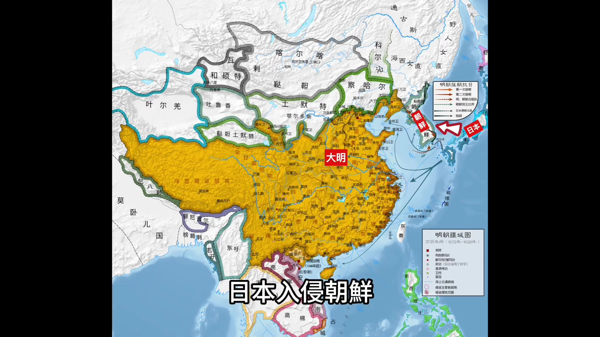
這次是豐臣秀吉統一日本之後，他集結了日本全國的力量發動了正式戰爭。他們不只是搶劫，是要把朝鮮變成日本的殖民地。而且豐臣秀吉的目標還不僅僅是朝鮮，他是要把朝鮮當做跳板進攻大明，甚至進攻東南亞。後來二戰時期日本略亞洲的思根在很大程度上就可以追溯到豐臣秀吉。
豐臣秀吉的計劃是第一步先佔領朝鮮，把朝鮮作為跳板，第二步是征服大明。征服大明之後，把大明的領土切分成小塊，然後分給日本的功臣。然後他還要遷都北京。第二步是他在浙江寧波指揮日軍繼續征討，征討天竺和南蠻。天竺就是印度，南蠻就是指東南亞。我們看在二戰時期日本的擴張版圖跟豐臣秀吉當時的計劃是驚人的相似，所以日本吞併亞洲的野心是可以追溯到豐臣秀吉的。不過豐臣秀吉的野心被當時的大明直接給擊潰了。
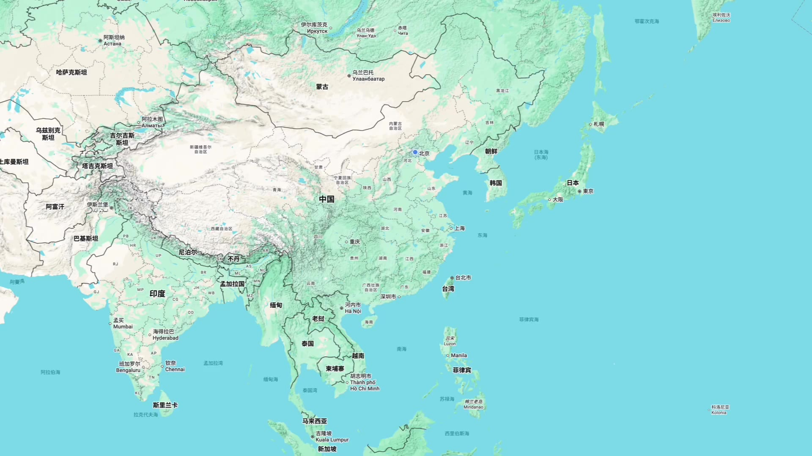
明朝到萬曆年間其實已經是晚期了，已經不是國力最強的時候了，但是還是擊敗了野心勃勃的豐臣秀吉。朝鮮方面呢，朝鮮因為明朝的援助避免了亡國之災。朝鮮君臣從上到下把明朝的援助都稱作是「再造之恩」，他們聲稱要「百世不忘」。朝鮮還真是做到了百世不忘。明朝滅亡之後，朝鮮在清朝的軍事壓力之下，雖然是不得不臣服於清朝，但是朝鮮在內部他們始終還是維持著對大明的追思。
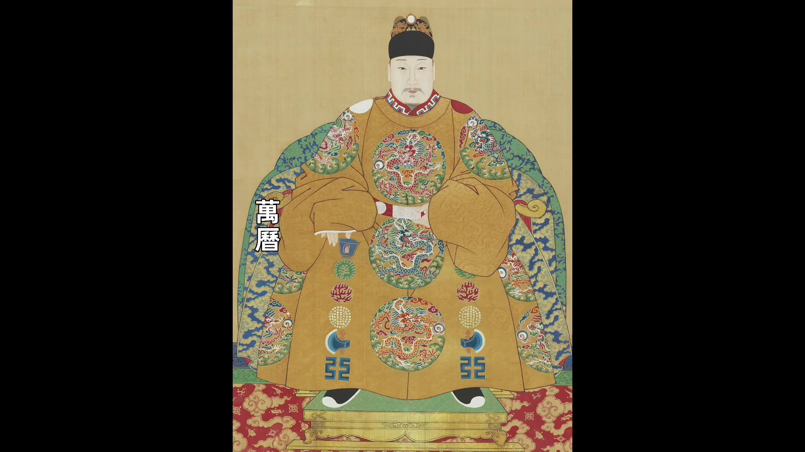
明朝滅亡之後，朝鮮建了一個「大報壇」，他們建『大報壇』就是為了紀念明神宗萬曆，來表達對這場「再造之恩」的永世不忘。還有關於年號的使用，朝鮮應該改用清朝年號，但是朝鮮並沒有。朝鮮對外他對清朝的外交文書上用的是清朝年號，但是他們的士大夫在自己國內的文件面用的還是明朝崇禎的年號。崇禎是1644年就死了，正常來說他死了之後就沒法用崇禎多少多少年了。朝鮮居然想了個辦法，他們用崇禎後就是用崇禎後多少多少年。
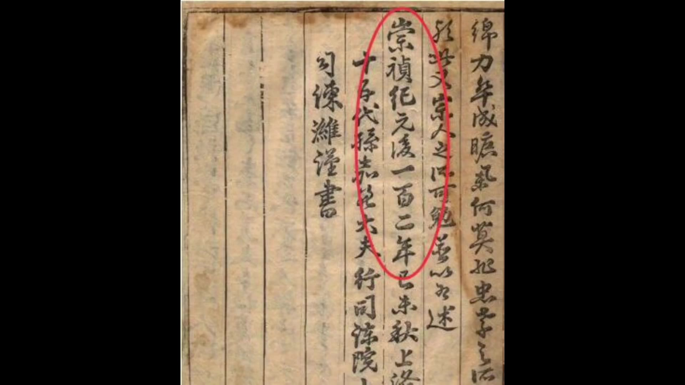
他們一直用這個年號，居然用崇禎後用到了崇禎後二百多年。可見由於這場戰爭的援助，這場萬曆年間的朝鮮戰爭對明朝對日本對朝鮮都有深刻的影響。今天我們就來講講這場戰爭的來龍去脈。
我們先說一下日本為什麼要打朝鮮，日本要打朝鮮有三方面原因。
一方面是豐臣秀吉，他個人野心的膨脹。在豐臣秀吉統一日本之前，日本是經歷了長達二百多年的戰國時代，當時日本有所謂的六十六國戰國時代，就是六十六國之間打來打去打了二百多年，最後是豐臣秀吉完成了日本的統一。豐臣秀吉統一日本之後當然覺得自己很牛，他就野心膨脹，他想征服的不止局限於日本本土，他想一統天下，一統天下就包括征服朝鮮，征服大明，甚至征服其他東南亞國家。這是豐臣秀吉的野心。除了野心之外，可能還有一個心理動機。
就是他的出身不好，他雖然統一了日本，但是在日本貴族眼裡面他還是缺乏『正統性』，所以他要通過征服更強大的大明來證明自己值得被尊敬。這是第一個原因，豐臣秀吉他個人的原因。第二個原因是轉移日本國內的矛盾衝突。豐臣秀吉當時面臨一個窘境就是「無地可封」。豐臣秀吉雖然統一了日本，但是他的統一是多方勢力妥協的結果，他不是把所有的大名都給滅了，很多日本有實力的大名像德川家康、上杉家、毛利家這些實力雄厚的大名，他們只是形式上臣服，他們的領地都掌握在自己手裡。所以豐臣秀吉能掌握的土地很有限。他掌握的土地有限，那些追隨他打天下的文臣武將為的是什麼呀，為的就是立功之後可以獲得更多的封地。現在豐臣秀吉沒有足夠的主地分給他們，如果這個問題解決不了的話，他這個剛剛建立的政權很可能很快就會分崩離析。所以豐臣秀吉向海外擴張，他這是把內部矛盾轉向外部，國內的土地既然不夠分，就去搶海外的土地。
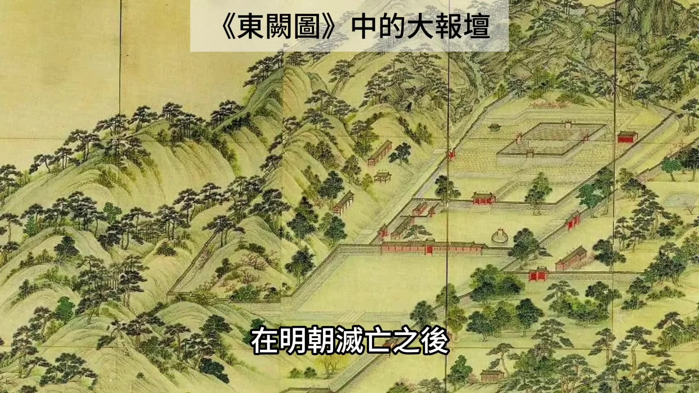
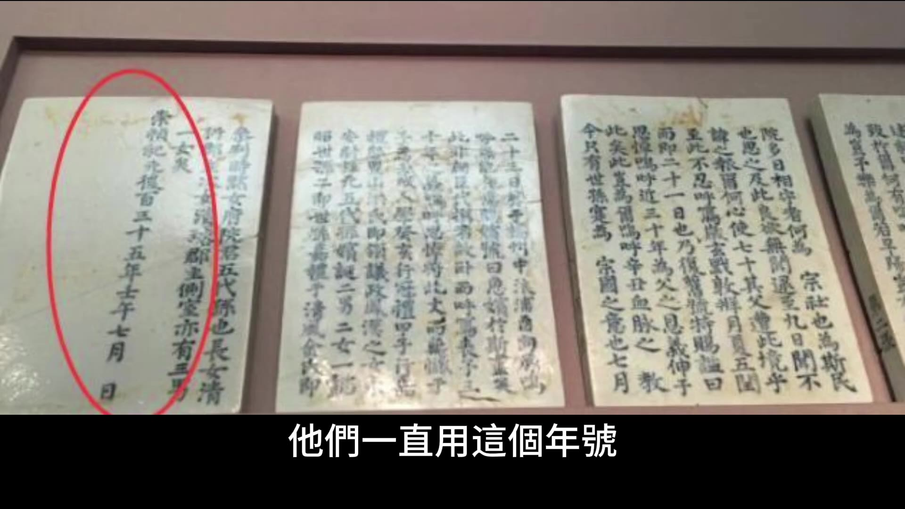
00:05:01
這是他打朝鮮的直接動機，向外發動戰爭還有一個好處，就是國內那些不聽他話的大名。剛才我們不是說了嘛，有很多實力雄厚的大名是名義上歸順，實際上豐臣秀吉控制不了他們。這些大名對豐臣秀吉來說是有威脅的，豐臣秀吉通過對外戰爭把全國都發動起來，當然也包括他們，這樣就可以把這些不聽話的大名的軍事實力損耗在海外，豐臣秀吉的統治就可以更加穩固。這是第二個原因。
豐臣秀吉想轉移國內的矛盾，第三個原因是經濟原因。日本國內有很多支持豐臣秀吉政權的經商家族，他們想要打破明朝對日本的封鎖，恢復勘合貿易。勘合貿易就是明朝跟其他國家的朝貢貿易，就是日本想讓明朝開放對自己的朝貢貿易。
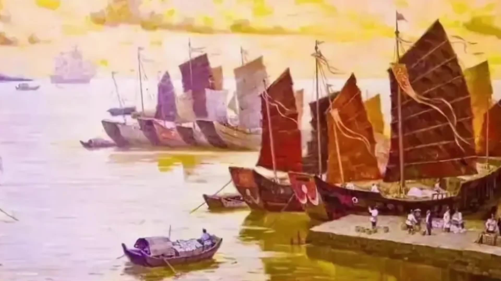
明朝在隆慶開關之後其實已經開放了對全世界的海外貿易，但是唯獨拒絕向日本開放。明朝拒絕日本有兩方面原因，一方面是倭寇的影響，嘉靖年間倭寇作亂實在是給東南沿海造成了很大損失，所以明朝認為日本人貪婪無厭，就拒絕跟他們貿易。第二方面是明朝當時的「俺答封員」已經讓朝廷每年花費數百萬兩白銀，如果再允許日本通貢要花費的費用肯定也不是個小數字。通貢對於明朝朝廷來說其實是一個花錢的事，所以從經濟角度來考慮，明朝也不希望開放跟日本的朝貢貿易。
明朝拒絕跟日本貿易，但是日本有一些商品還必須要從明朝進口，比如說陶瓷還有茶葉等等。除了這些日用商品之外，日本也需要從明朝進口比如說硝石、鉛等原材料。日本當時的軍隊大量使用火繩槍，火繩槍的彈藥就需要這些原材料，而日本國內的產量很低，他們主要就是依賴從明朝進口。明朝拒絕跟日本貿易，日本又需要明朝的這些商品，他們就只能被迫的從澳門的葡萄牙人手裡購買，葡萄牙人從明朝手裡面買出來再轉手賣給日本人，這樣日本商人就要承擔高昂的轉手費和運費。所以那些跟豐臣秀吉政權結合的日本富商，他們就希望通過戰爭打破明朝對日本的封鎖，恢復勘合貿易。
這三點原因，豐臣秀吉的個人野心、轉移國內的矛盾和恢復勘合貿易，就是日本發動這場戰爭的主要原因。其實我們能看出來，日本的主要目標是明朝，並不是朝鮮。但是沒辦法，由於朝鮮的地理位置，日本注定要先打朝鮮。所以豐臣秀吉在給朝鮮發通牒的時候說的是讓朝鮮臣服，他們要借道朝鮮進攻明朝，他們攻打明朝的先鋒。這場朝鮮戰爭分為三個階段，第一階段是萬曆二十年到萬曆二十一年，是日本第一次入侵朝鮮，按照朝鮮的叫法「壬辰倭亂」。這個階段的戰爭叫做第二階段是萬曆二十一年到萬曆二十四年，是明朝和日本的和談時期。第三階段是萬曆二十五年到萬曆二十六年，是日本第二次入侵朝鮮，叫「丁酉再亂」。今天我們先講第一階段的戰爭「壬辰倭亂」。
豐臣秀吉為了發動這場戰爭，他派到朝鮮的總兵力有超過20萬人。20萬人分水軍和陸軍，水軍有9,000多人，擁有700多艘戰船和2,000多艘輔助船。陸軍第一批渡海的有15萬人，分為9個軍，後續還有5萬多人作為增援部隊。
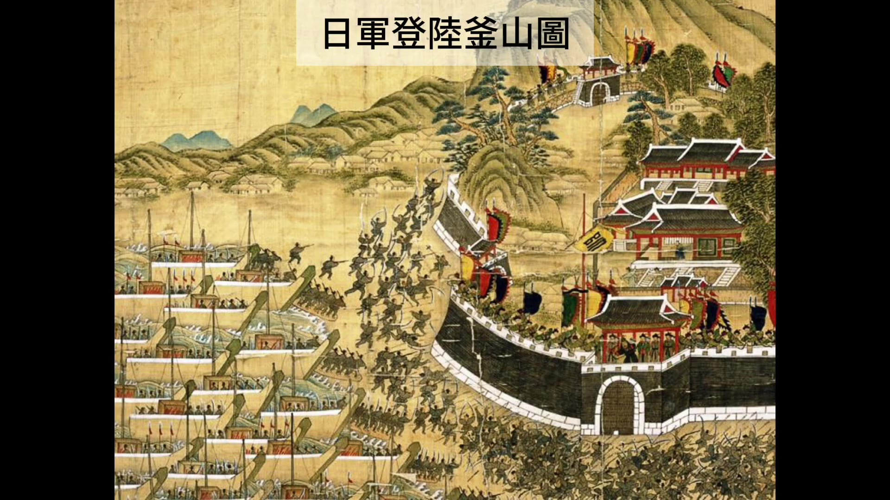
700多艘戰船、2,000多艘輔助船載著日本陸軍聲勢浩大的登陸朝鮮，而朝鮮方面幾乎沒有任何防範。日本在入侵朝鮮之前，豐臣秀吉其實多次向朝鮮發出了通知和通牒，但是朝鮮還是沒有防範。朝鮮沒防範主要原因是當時朝鮮處於黨爭的狀態，兩個黨一爭就把防範的事給耽誤了。朝鮮當時有兩個黨，一個叫西人黨，朝鮮的黨爭跟明朝的黨爭就很像，兩派什麼都爭，一派要幹點什麼事，另外一派一定會找出理由來反對。這次日本向朝鮮發出通牒，豐臣秀吉派出好幾撥人前來通知，接到通知之後朝鮮的西人黨就說說倭寇要打過來了，我們要防範；東人黨立刻就反對，東人黨說倭寇有什麼可怕的根本不足為懼。朝鮮這兩個黨為了反對而反對，天天爭論不休，誰也沒去認真做個調研，誰也沒去看看日本到底會不會打過來，到底日本的軍力強不強大，這些有用的事他們一點都沒幹。所以當日本大軍打過來的時候，朝鮮幾乎就是毫無準備。朝鮮不僅毫無準備，他們軍隊也是非常虛弱，因為朝鮮已經享受了200多年的和平，200多年沒打過仗，士兵平時也不怎麼訓練。日軍打過來之後，朝鮮軍隊沒怎麼抵抗就全跑了。
00:10:00
戰爭爆發僅僅20天朝鮮的首都漢城就淪陷了僅僅43天朝鮮就三都失守八道瓦解
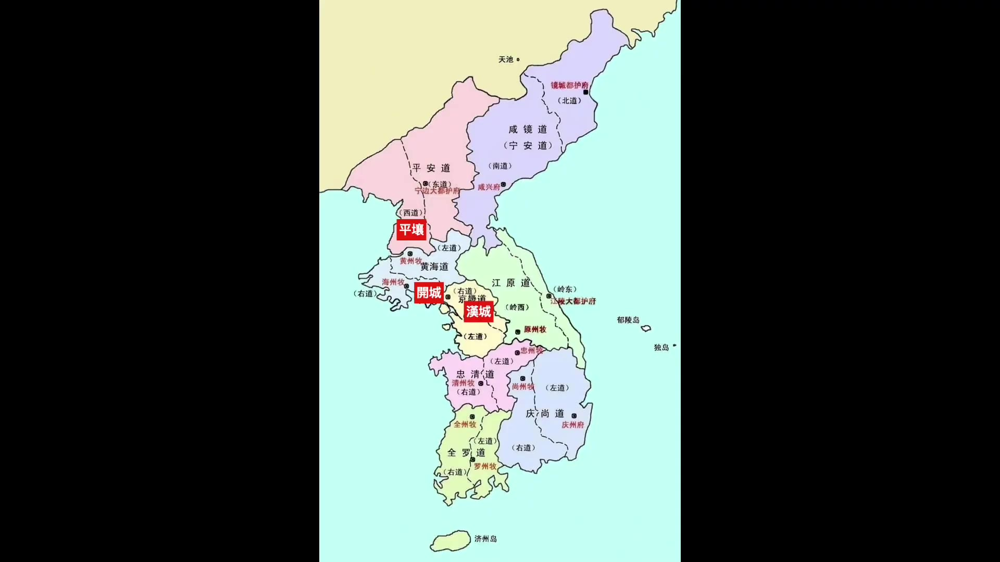
三都指的是朝鮮最核心的二座城市一個是首都漢城一個是松都開城還有一個是西都平壤八道淪陷八道指的是朝鮮的行政區域的劃分就類似於明朝的行省當時朝鮮全國分為八個道三都失守八道淪陷之後朝鮮國王就逃到了最北邊
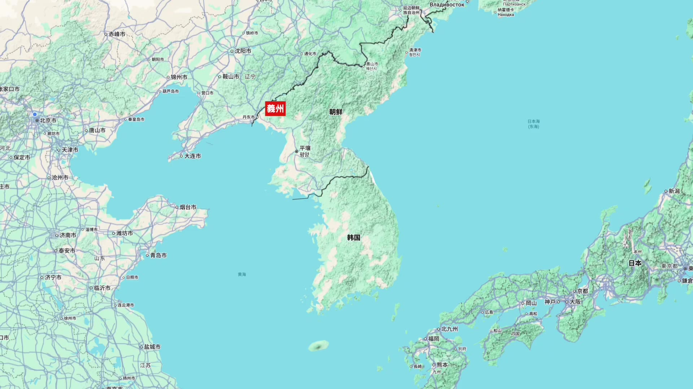
逃到了靠近明朝邊境的義州開始向明朝求援
明朝收到朝鮮的求援之後除了討論要不要救援之外重點討論的是朝鮮是不是跟日本有所勾結因為戰爭爆發之後遼東地區有很多謠言這些謠言說朝鮮已經跟日本達成了秘密協議準備聯手入侵明朝說朝鮮的求援只是想引誘明軍進入朝鮮然後在朝鮮境內把明軍給殲滅這些謠言是怎麼傳出來的是豐臣秀吉給朝鮮的通告裡面曾經說過說讓朝鮮跟他們一起打大明不過當時朝鮮並沒有同意朝鮮雖然沒有同意但是豐臣秀吉給其他國家的國書裡面提到過這個事比如說琉球日本給琉球的國書裡面就提到過說他們已經跟朝鮮商量好了一起攻打大明攻打大明的時候還讓朝鮮的兵作為先導部隊琉球接到日本的國書之後他就把這個事報告給了明朝明朝一看朝鮮跟日本居然有使節往來而且這麼重要的情報朝鮮怎麼不提前報告等到日本打進來了你才來求援這個事是不是有問題就很值得懷疑而且你朝鮮怎麼敗得這麼快43天就全國淪陷了這種潰敗的速度也很讓人懷疑懷疑你到底是不是主動在給日本人讓路所以明朝對朝鮮就充滿了不信任但是面對這種懷疑明朝並沒有直接拒絕而是採取了非常謹慎的偵查措施明朝的兵部尚書石星他派出好幾波使者到朝鮮境內探查情況這些使者是分批去的有的是明面上的官員動用明面上的身份去勘察也有的是暗中探訪的錦衣衛這些使者的探訪結果回來一彙報
基本上都證實了朝鮮說的是實話日本確實是打過來了而且朝鮮沒有跟日本勾結證實了朝鮮沒有問題之後明朝開始援助朝鮮明朝為什麼會援助朝鮮有兩方面原因第一個原因是宗藩體系宗藩體系就是明朝是宗主國朝鮮是明朝的藩屬國這個意思就是明朝你是大哥朝鮮是小弟小弟被人欺負了大哥一定要出手大哥要是不出手以後誰還認你當大哥你就失去信任了不僅朝鮮不會認你其他小弟也不會認了明朝這個宗藩體系就會瓦解而且用大哥和小弟來比喻都說得輕了朝鮮自己在文書裡面經常把明朝比喻成是父親把自己比喻成是兒子
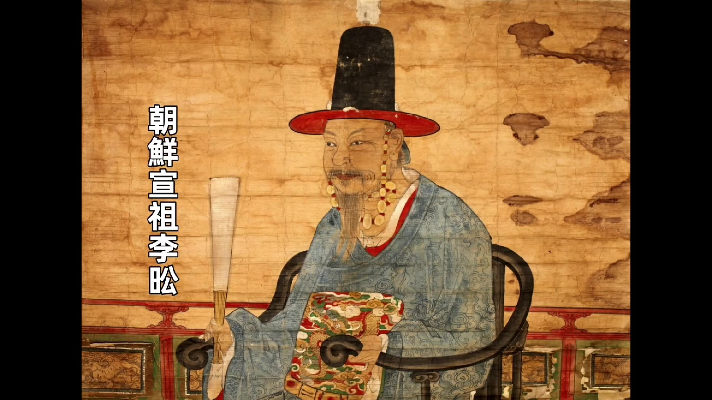
朝鮮國王李昖還曾經公開提出過「孝子說」說朝鮮是大明的孝子說自己待奉大明就像兒子侍奉父親一樣而日本是賊子面對這麼一個孝子來求援明朝要是不救在道義上面就說不過去第二方面從地緣政治來看因為很明顯朝鮮跟遼東接壤日本打完朝鮮直接就能打到遼東打到遼東就是打進大明了而且日本在文書裡面都說了他們是借道朝鮮借道的目的是為了打大明所以這場戰爭大明無論如何是躲不了的既然躲不了在朝鮮境內打總比在自己境內打要好所以支援朝鮮肯定是最好的選擇當時明朝內部對於是否出兵援助朝鮮爭議還是很大但是在最關鍵的時刻萬曆起到了決定性作用
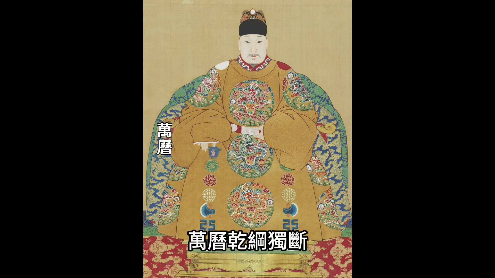
萬曆乾綱獨斷拍板決定支援朝鮮
明朝決定支援朝鮮但是當時明朝在寧夏還在打仗明朝的哱拜之亂還沒有平定所以明朝先派出一個先遣部隊進入朝鮮去試探一下日軍的實力看看能不能用先遣部隊就把平壤給奪回來率領這支先遣部隊的人是祖承訓祖承訓的職務是遼東副總兵這個祖承訓他是軍人世家他家族從朱元璋時代開始就跟著朱元璋打仗然後世代從軍所以祖承訓是一個軍事能力很強的將領而且他是鎮守邊疆常年打仗他這個副總兵的職務是他一級一級靠戰功打出來的他有豐富的作戰經驗我們再多說一句後來的名將祖大壽就是祖承訓的兒子祖承訓率領的3,500人也是遼東精銳騎兵他率領著這3,500人進入朝鮮之後
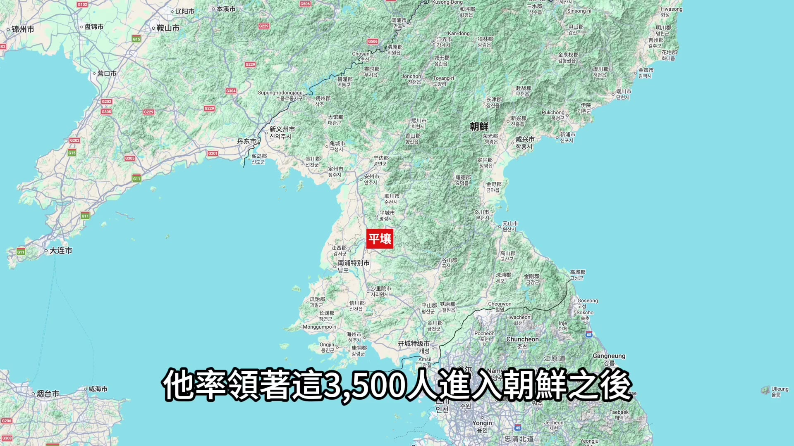
快速行軍很快就趕到了平壤城下然後直接就攻城他攻城當天天上還下著雨祖承訓冒雨攻城有人就勸祖承訓
00:15:00
說下雨不適合攻城，下雨給日軍來個突襲，祖承訓的策略還真是對的，日軍果然沒反應過來。日軍打探到明朝的援軍進入朝鮮了，但是沒想到援軍來的這麼快，而且他們沒想到明軍居然會冒雨攻城，結果就是日軍連城門都沒關，明朝沒用攻城直接就衝到平壤城內了。進城之後讓祖承訓沒有想到的是，日軍在城內的人數遠遠超出他的情報，朝鮮給祖承訓提供的情報是日軍在平壤城內只有一兩千人，日軍的人數至少有15,000人甚至可能達到2萬人。日軍被攻破城門打了個措手不及之後立刻調整戰術展開伏擊戰和巷戰，明軍沒想到日軍有這麼多人一下有點懵，而且平壤城內的街道很狹窄很適合日軍打伏擊。
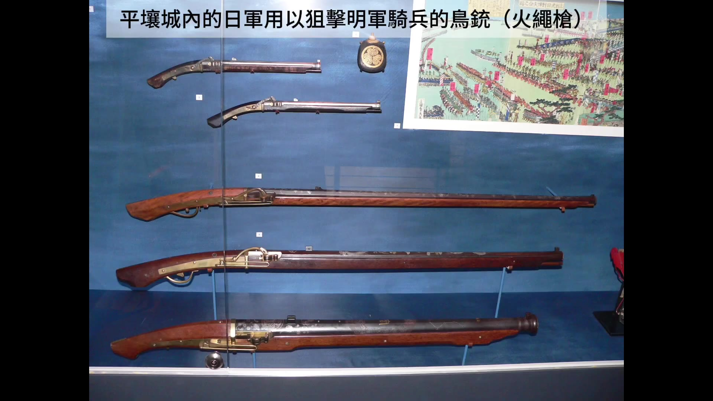
_日軍找各種掩體用火繩槍襲擊明軍，明軍的先鋒將領是史儒，史儒身先士卒衝在最前面，沒想到他被日軍的火繩槍給射死了。史儒死了之後明軍陣腳大亂開始潰敗，祖承訓一看形勢不妙他就率領部隊撤出城門往回跑，這第一場明軍和日軍的戰鬥以明軍戰敗結束。這一仗戰敗有兩個主要原因，一個是祖承訓輕敵，個是朝鮮給的情報有誤。祖承訓輕敵是他根本就沒把日軍放在眼裡，祖承訓常年在邊疆跟蒙古人作戰而且屢戰屢勝所以他非常自信，對於日本人他根本就看不起，他攻城當天甚至部隊連早飯都沒吃，他認為完全可以速戰速決，他下令說打下城池再吃早飯。朝鮮給祖承訓的情報有誤這也是戰敗的主要原因，朝鮮給出這個錯誤的情報也有兩方面原因，一方面是他們的偵察能力確實有限他們不太知道日軍究竟有多少大，還有一個方面原因就是他們想盡快的把明軍給拉入戰場，不管明軍能不能打贏反正明軍參與到朝鮮戰場來了，為了維護大明的權威明軍就不可能輕易撤兵，所以朝鮮即使明知自己的情報不准也把不准的情報提供給明軍。這是我軍到朝鮮之後打的第一仗，第一場平壤戰役，第一仗就是個敗仗。打了敗仗之後朝廷雖然把祖承訓給革職了，但是通過這次試探萬曆也意識到了日軍並不是那麼好對付的，造成的結果就是萬曆開始籌劃第二輪規模更大的援助朝鮮。這仗打完之後日軍雖然打贏了，但是日軍反倒開始有點害怕了，因為日軍見識到了大明騎兵的威力，在此之後日軍在戰略上開始變得趨於保守，不敢輕易再向北推進了。_
在朝鮮的第一仗戰敗之後按理說明朝應該立刻派出更多的軍隊去朝鮮戰場，但是當時寧夏的哱拜之亂還沒有平定，明朝不能雙線作戰，而且明朝要集結更多的軍隊要集結大軍也需要時間，所以明朝就想了一個策略，他們派使者去跟日本人和談，這個和談實際上是個假意和談，是用和談來拖延時間。明朝派去和談的使者是沈惟敬，沈惟敬是什麼人，他並不是官，他沒有任何的官職在身，在官方眼裡面甚至認為他是一個市井無賴，那為什麼選中他呢，是兵部尚書石星選出來的，沈惟敬石星選他有好幾個原因，第一個原因恰好就因為他不是官，因為和談在明朝的政治語境裡面是屬於不光彩的行為，在當時的朝廷上面的氛圍主戰派一般都被認為是有節氣的，主和派都被認為是沒有骨氣甚至被認為是恥辱的，所以石星不敢派正式的官員去和談，他從民間選個人出來，如果和談失敗這個人就可以被作為「棄子」可以隨時犧牲掉，這樣可以維護朝廷的體面，這是第一方面原因。第二個原因是沈惟敬他會日語，他是浙江嘉興人，他除了會日語之外他還懂很多日本的風俗習慣，第三個原因是沈惟敬他口才出眾而且還有膽量，這點也很重要，你要是沒膽量進入敵軍陣營之後很可能直接就被嚇得說不出話了，沈惟敬正是因為他同時滿足了這幾點才被石星所選中，派他到日本假意和談。我們這麼詳細的來介紹沈惟敬是因為這個人在這場朝鮮戰爭中是個非常重要的角色，他不僅在這次的假意和談裡面起了很大作用，在後面長達三四年的和談裡面他也是重要角色。沈惟敬進入朝鮮之後他帶著三四個隨從就到平壤城外的乾伏山跟日軍談判，我們看在膽識方面他絕對是過關的，而且他確實是個談判高手，他完全能抓住對方的心理，日本方面負責談判的是小西行長。
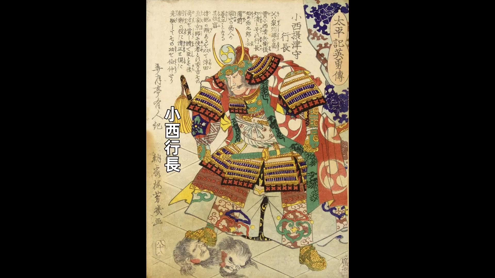
00:20:02
小西行長在這場戰爭中亦扮演重要角色，因此我們再進一步介紹其背景。小西行長出身商人家庭，其家族經營藥材生意，從事海外貿易多年，對大明與朝鮮均有深入了解。然而，由於其商賈出身，遭日本武士階層輕視。其後從軍投靠織田信長，隸屬豐臣秀吉麾下，參與多場戰役，屢建功勳，成為秀吉信任的部將。此次豐臣秀吉出兵朝鮮，小西行長率領第一軍團18,700人，為日軍中規模最大且最精銳的部隊，亦為首批渡海至朝鮮的先鋒部隊，一路征戰有功。
日軍佔領漢城後，採取分兵控制朝鮮八道的策略：
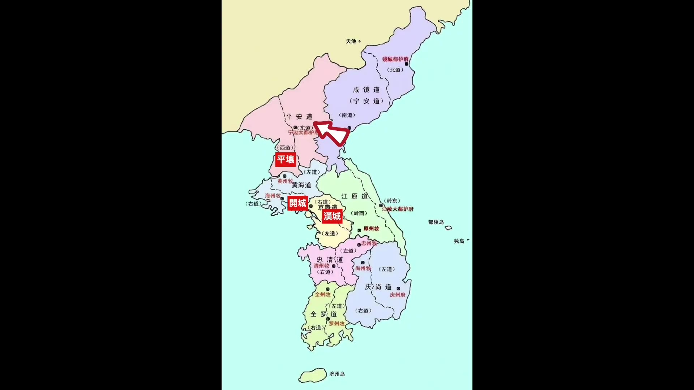
小西行長負責控制平安道，其首府平壤遂被其攻佔。平壤作為日軍進攻大明的前線基地，由小西行長駐守亦反映其戰略地位。此後，小西行長作為日方代表與沈維敬進行談判。值得注意的是，日軍雖在第一次平壤之戰中取得勝利，但仍願意談判，主因在於小西行長的判斷。
小西行長主張談判有三重考量：其一，雖勝明軍，但與祖承訓率領的遼東鐵騎交戰，發現明軍戰力遠超預期，僅3,000餘人即具強大威脅；其二，日軍後勤補給受朝鮮義兵頻繁騷擾，補給線屢遭切斷，前線陷入糧餉短缺困境；其三，朝鮮水師在李舜臣指揮下屢敗日軍，切斷日軍水上補給線，更使日軍面臨被包圍風險。作為商人出身的將領，小西行長參與戰爭的核心動機在於恢復與明朝的勘合貿易，故主張通過談判達成目標。
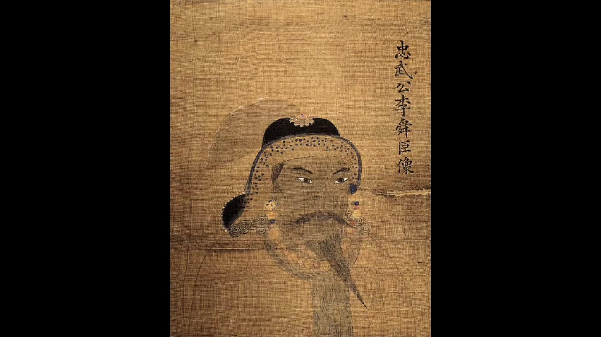
李舜臣原為朝鮮水師普通將領，戰場表現卓越，逐步晉升為水師統帥。其善用地形與心理戰術，屢敗日軍，使日軍水師不敢輕出港口，補給線徹底受阻。此情勢促使小西行長在將戰場情形匯報豐臣秀吉後，派其弟小西與一郎返日遊說，分析征服明朝難度極高。
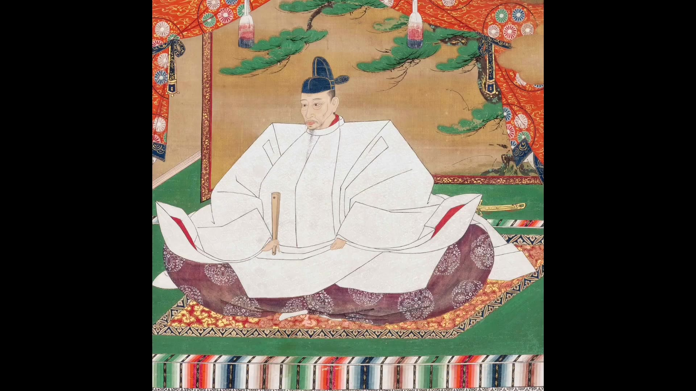
豐臣秀吉得知前線軍糧短缺與朝鮮義兵反抗情勢後，態度轉為保守，下令各部暫守已佔領地區。小西行長的談判遂在秀吉默許下進行，其提出的條件為二：其一，恢復勘合貿易，援引「俺答封貢」先例，要求明朝給予日本與蒙古俺答汗同等貿易待遇；其二，劃定朝鮮領土，以平壤東面大同江為界，江西歸朝鮮，江東割讓日本。
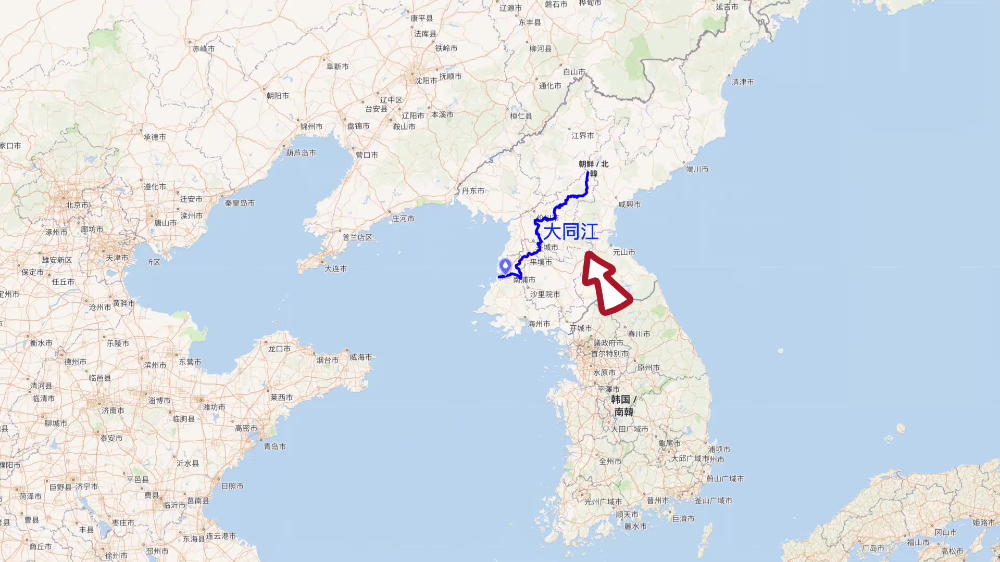
小西行長承諾，若明朝答應上述條件，日軍即退出平壤。此為當時日軍在朝鮮戰略轉折的重要事件。
00:25:00
面對小西行長提出的條件，沈惟敬一下就能捕捉到關鍵的談判點。沈惟敬先是看出來了日軍對明軍的恐懼，利用這一點他就嚇唬日軍，他說明軍已經集結了70萬大軍，70萬大軍即將進入朝鮮，明朝大軍來了之後，日軍有敗無勝，不可能全身而退。在恐嚇之後，沈惟敬又採取了安撫的策略，他看出來了小西行長重視通商，他就跟小西行長說，說明朝的封貢體系需要先「冊封」才能，他說日軍只要退兵，天朝不會吝惜給日本封貢的待遇，但是需要他回去向皇帝奏報，他說他往返向皇帝奏報需要50天時間，建議雙方休戰50天。小西行長也不見得真的相信明朝會來70萬大軍，70萬大軍實在是有點離譜，但是沈惟敬的這種說法也符合小西行長的立場，因為小西行長本來他就不想繼續打，沈惟敬把明軍人數說的越多，他不打的這個觀點就越站得佳腳，而且沈惟敬給了他一個希望，沈惟敬說明朝對日本開放封貢是可以實現的，只需要回去彙報一下就行，所以小西行長就同意了暫時休戰。沈惟敬就是這樣靠連嚇唬帶利誘給明朝爭取了50天的休戰期。沈惟敬爭取的這50天時間對明朝來說很關鍵，就是在這50天之內，明朝從容的結束了西北的叛亂，並且把在西北獲勝的精銳部隊調往朝鮮前線。沈惟敬的假意和談雖然欺騙性很大，雖然被明朝的士大夫們所不齒，但是他也確實為明朝打第三次平壤戰爭爭取到了有利的形勢。
他的這種騙術在第二次平壤戰爭之前還會再次發揮重大作用。好了，今天的內容就先講到這裡，下期我們再繼續講後面的部分。
有興趣的朋友歡迎點擊影片下方鏈接瞭解，歡迎大家點贊關注。
大家好，今天我們繼續講萬曆朝鮮戰爭，上期我們講到沈惟敬通過假意和談給明朝爭取到了50天的休戰時間，利用這個休戰時間，明朝從容的結束了寧夏的哱拜之亂，然後調動大軍進入朝鮮準備再打第二次平壤戰役。這次明朝派出的主帥
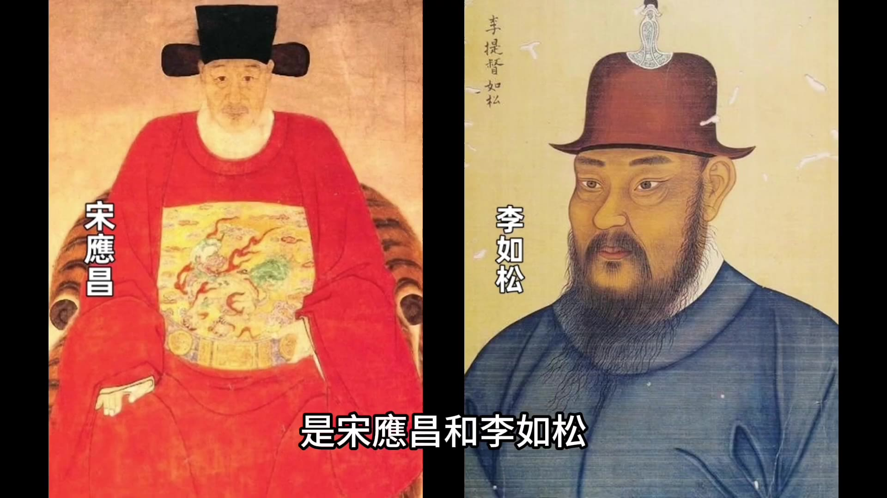
是宋應昌和李如松，宋應昌是文臣，官職是經略，李如松是武將，官職是提督。明朝一向都是以文御武，所以按照官職來說是宋應昌節制李如松，但是李如松不是一般人，他是遼東世家，他父親是李成梁，李成梁可以說是萬曆年間的第一名將，他是大明200多年裡面唯在世就被授予「三公」勳銜的武將，明朝是以文御武，而且明朝對勳銜的授予一向都是很吝嗇，他作為一個武將在活著的時候就被授予「三公」的勳銜，這絕對是破格的，也是絕無僅有的殊榮。李成梁可以說是達到了明朝武將的巔峰，李成梁鎮守遼東20多年，家族更是顯赫，他的九個兒子出了五個總兵和四個參將，號稱「一門九將」。
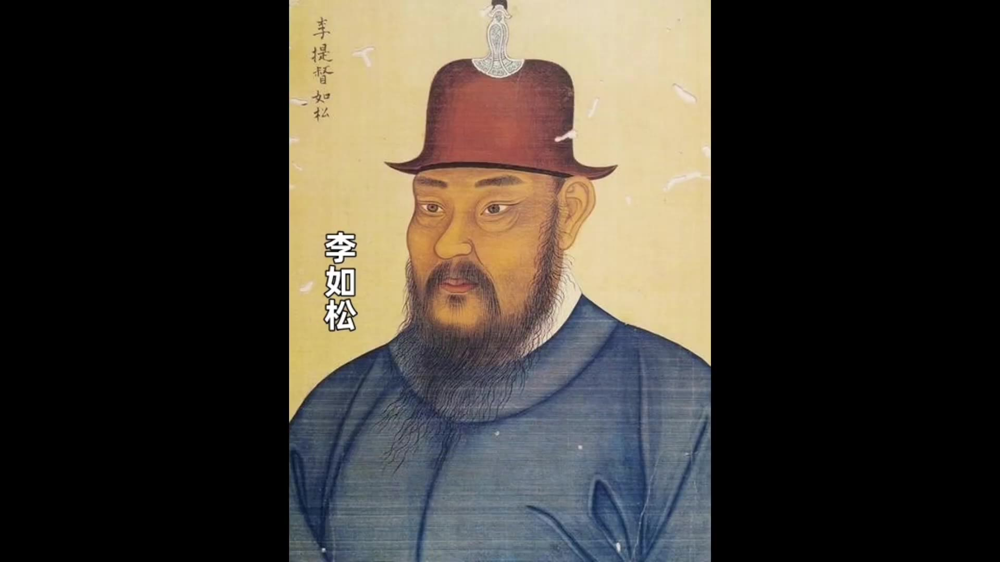
李如松是李成梁的長子，他是剛在寧夏平定了哱拜之亂，可謂是風頭正盛，而且他帶到朝鮮的軍隊正是他在寧夏獲勝的遼東鐵騎。這是李如松和他的遼東鐵騎。除了李如松之外，進入朝鮮戰場的還有副總兵麻貴、董一元、李如松的弟弟李如梅、李如柏等等，這都是當時明朝的名將。除了北方的軍隊之外
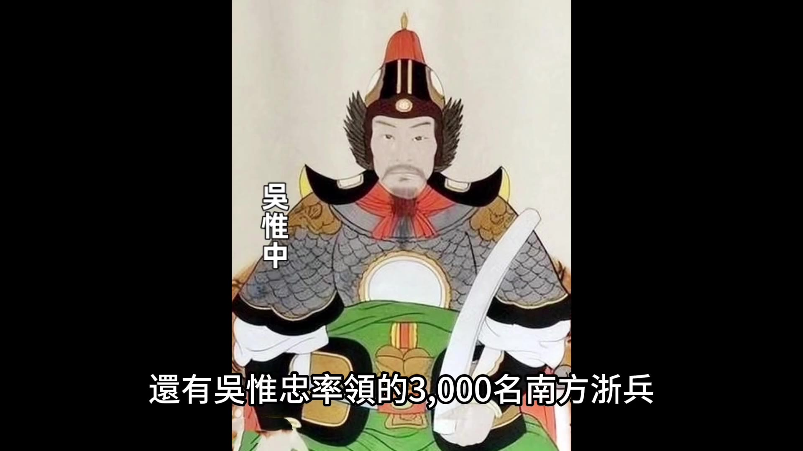
還有吳惟忠率領的3,000名南方浙兵，吳惟忠是戚繼光的老部下，因為這次是跟日本人打仗，日本人擅長使用火繩槍，戚家軍在南方打倭寇打的多，很有經驗，他們熟悉日本人的戰術和火繩槍，他們有專門對付日軍的戰術和陣法，他們配備的武器比如說藤牌都是專門對付日軍的，這支部隊在朝鮮戰場也將發揮重大作用。這是簡單介紹了一下第二批進入朝鮮戰場的明軍，這次進入朝鮮戰場的明軍的總人數包括遼東鐵騎包括宣大精銳也包括南方的戚家軍一共是38,937人。明軍進入到朝鮮之後，第三次朝鮮戰爭即將開始。
這次在打仗之前，李如松是做了充分的偵查，他們對平壤城內的日軍人數和火力情況都有清晰的認識，上次明軍戰敗一個主要的原因就是情報有誤，這次李如松不僅把情報工作做得很到位，而且他還利用沈惟敬給日軍釋放了假消息麻痹日軍，李如松讓沈惟敬去跟小西行長說，說大明朝廷已經答應了日本提出的和談條件，並且派出了使者前來冊封，沈惟敬去跟小西行長說了之後，
00:30:01
小西行長就真相信了
小西行長一直在等著大明的使者前來冊封，放鬆警惕，對於大批的明軍進入朝鮮境內毫不知情。李如松在即將攻打平壤城之前，還讓沈惟敬去騙小西行長說冊封的使者就要來了，讓小西行長出城迎接。小西行長派出兩名得力手下率領20多人出城迎接，結果遭到了明軍的伏擊，損失慘重。這時候小西行長才發現自己被騙了，才發現大量的明軍已經抵達平壤城下。然後明軍開始攻城，李如松的戰術是對平壤城北、南三面包圍進攻，進攻的西。留出東面不進攻，他是故意留出一面不進攻，讓日軍有個退路，因為如果不給日軍留出退路，他們很可能就會死守平壤，這樣就會造成明軍過多傷亡。他給日軍留一條退路，日軍就可以逃跑，可以不用拼命死守。然後李如松利用他騎兵的優勢，在日軍撤退的途中進行截殺，這是李如松的戰術。然後我們再看明軍攻城的具體情況
平壤城的西面是明軍主力，西面有兩個門，李如松讓他弟弟李如柏負責攻打普運門，讓他的得力大將楊元負責攻打七星門，七星門是主政方向，李如松的中軍也設在七星門外。午壤城的北面有=個牡丹峰，牡丹峰是平壞城的制高點，非常險要，進攻牡丹峰的住務，李如松就交給了吳惟忠率領的戚家軍。平壤城的南面的主城門是含毬門，李如松安排攻打含毬門的是祖承訓和朝鮮軍，祖承訓就是第一次平壤戰役戰敗了那個將領，上次他戰敗了之後被朝廷革職，李如松這次特意把他也帶來，給他一個戴罪立功的機會
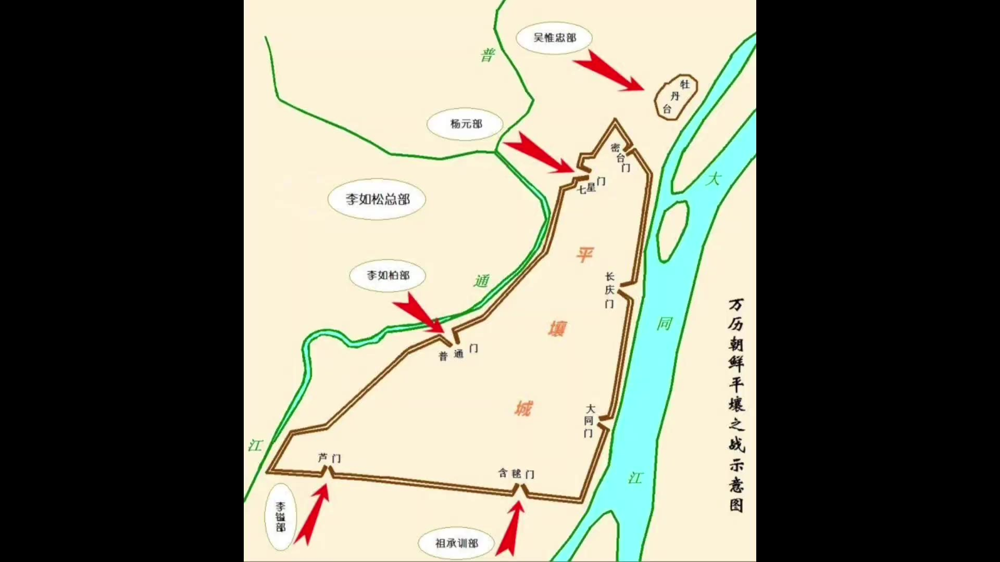
攻城開始之後，西面的戰場，明軍的主力在西面用大將軍炮壓制日軍的火繩槍，明軍的大炮射程遠，威力大，自軍的火繩槍完全無法抵抗，城牆工事被大量摧毀，最終明軍利用火炮直接轟穿城門。李如松親自帶頭衝鋒，明軍衝進城牆後跟日軍展開巷戰。在平壤城的北面，吳惟忠率領戚家軍強攻牡丹峰，戚家軍非常英勇，吳惟忠在戰周中胸部中彈，他仍然堅持在陣前指揮，最終戚家軍成功佔領了牡丹峰，取得了制高點。在平壤城南面，祖承訓採用了一個偽裝奇襲的戰術，祖承訓讓他手下的明軍都穿上了朝鮮步兵的衣服，混在朝鮮軍裡面，他們對朝鮮軍非常輕視，看到朝鮮軍來攻城，他們防備就很松懈。祖承訓率須部隊接近到城下的時候脫掉朝鮮軍服，突然發起猛攻
改破之後也跟日軍展開巷戰
方向作戰都獲得勝利，小西行長看勢不妙，只能率領著殘部棄城逃跑，他們從東面出城，渡過結冰的大同江往漢城方向逃跑，東面出口是李如松特意給留出來的，他當然是早有準備，李如松派出騎兵追擊，在明軍騎兵的追擊之下^日軍在逃亡的途中再次遭到沈重打擊，這場平壤戰役不僅成功收復了平壤，還消滅了大量的日軍主力，日軍被擊斃超過1萬人，小西行長的第一軍團基本被打殘，這場戰鬥明軍的實力讓日軍產生畏懼，日軍主動收縮防線
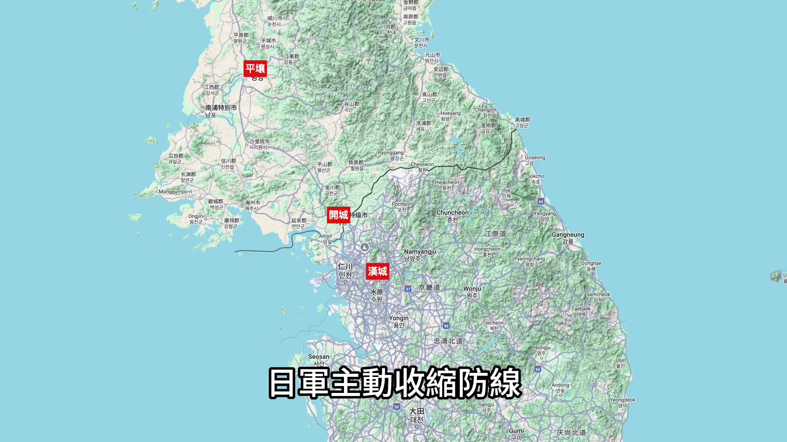
放棄開城退到了漢城附近進行防守，明軍在平壤大獲全勝之後士氣如虹，李如松下—個目標是漢城
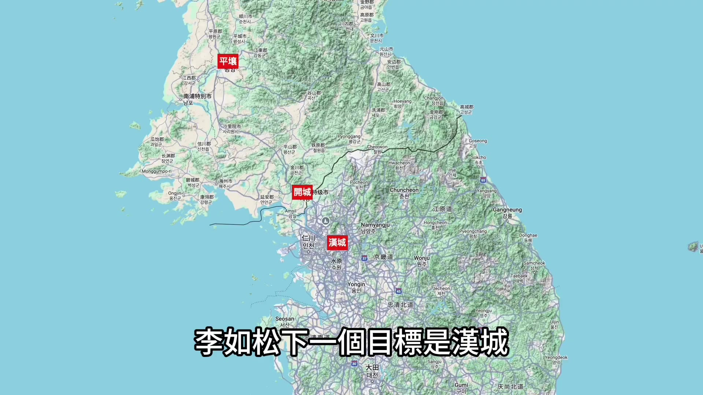
他派出副總兵查大受率領一支精銳騎兵先去漢城方向做偵查，查大受率領500騎兵一路疾馳，他們只用了一天時間就到達了漢城西大門外，在漢城西大門附近查大受意外遭遇了日軍的一支巡邏隊，兩軍發生交戰，查大受的遼東鐵騎表現勇猛，很輕鬆就擊敗了日軍的巡邏隊，並且殺死了對方63人，在擊敗對方之後查大受退到了後方的碧蹄館駐紮
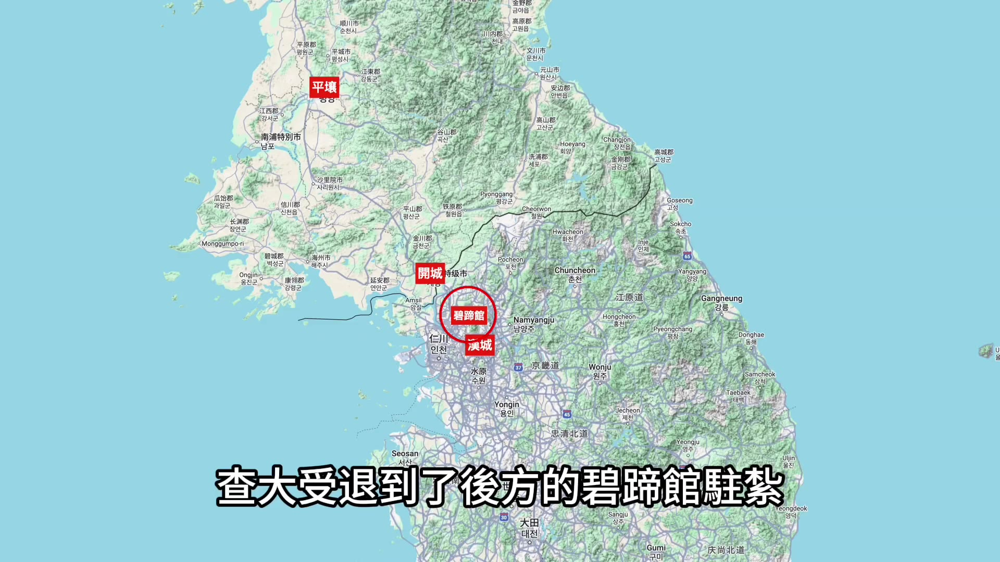
然後他派人回去給李如松彙報情況，查大受在信裡面說說日軍鬥志全無，他們輕鬆就擊敗了一股日軍，他推測漢城裡面的日軍應該也做好了棄城的準備，他請李如松親自到前線來探查敵情
這份情報李如松很快就收到了，他收到查大受情報的同時，他還收到了另外一份情報，另外一份情報是前方的朝鮮哨兵傳來的情報，朝鮮哨兵傳來的情報說的是日軍已經撤出漢城，請明軍盡快前來接管漢城，這兩份情報疊加在一起就讓李如松產生了輕敵的心理，他相信日軍已經撤離漢城或者準備棄城了，於是他就不等大部隊
00:35:01
就快速趕往漢城，但是李如松收到的這兩份情報其實都有問題。朝鮮哨兵的情報是故意釋放的假情報，查大受的情報也是他誤判了日軍的情況。查大受輕鬆打敗日軍的巡邏隊後，就認為日軍已經毫無士氣，準備棄城，實際上並不是這樣。
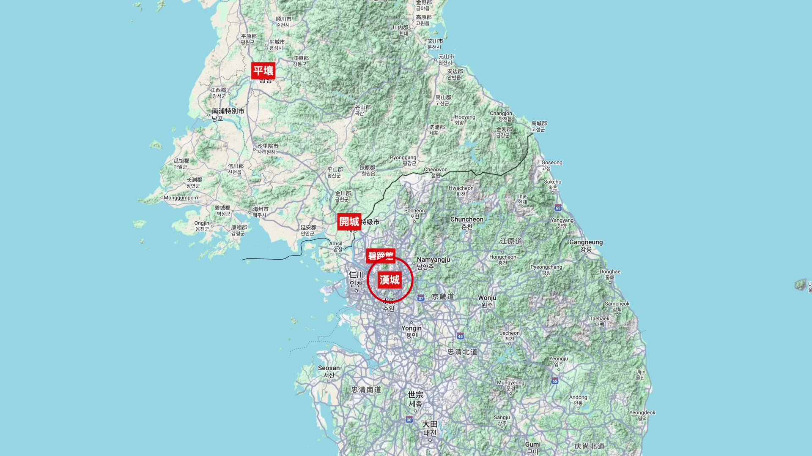
日軍在漢城內總兵力有4萬人，兵力並不少。在巡邏隊被打敗之後，守衛漢城的日軍將領已經知道明軍要來了，對於如何應對他們有很大爭執。他們有三種聲音：一種是固守漢城，一種是棄城逃跑退回釜山，還有一種聲音是全軍出擊，主動到城外迎敵。日軍將領們首先否定了棄城逃走，因為日軍在漢城有4萬人，人數並不少，他們要是一撤，日軍辛辛苦苦打下來的朝鮮領土就都沒了。還有小早川隆景認為，現在日軍士氣低落，要是不能通過一場決戰來鼓舞士氣，日軍即使撤退也可能在撤退的途中崩潰。
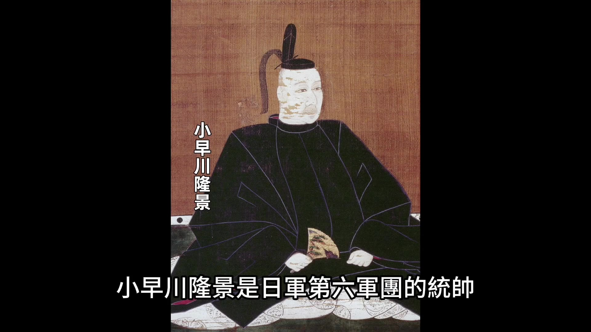
小早川隆景是日軍第六軍團的統帥，他是日軍名將，擁有很高的資歷和聲望，他的態度有很高話語權。不過小早川隆景不是日軍在漢城的最高統帥，漢城當時最高的統帥是宇喜多秀家。宇喜多秀家是豐臣秀吉的養子，他也是日軍入侵朝鮮的總統帥。日軍打下漢城之後他就坐鎮漢城主持全局。宇喜多秀家的態度也是不能撤退，這點他跟小早川隆景的觀點是一樣的，但是在作戰方案上宇喜多秀家和小早川隆景就有分歧。宇喜多秀家主張固守漢城，小早川隆景主張主動出擊。小早川隆景認為不能固守，要是固守漢城肯定就會包圍漢城，漢城要是被明軍給合圍了，日軍的補給線就會被切斷，所以必須主動出擊，出城迎敵。最後日軍是採取了小早川隆景的方案，主動出擊，而且是動用全部兵力全軍出擊。日軍出擊之後，他們的一支先鋒部隊在碧蹄館南面的礫石嶺找到了查大受的部隊，雙方展開戰鬥。日軍的這支先鋒部隊人數並不多，只有六七百人。查大受500人打日軍六七百人，本來問題也不大，但是讓他更有底氣的是他後面還來了一支援軍。李如松在派出查大受率領500騎兵先去偵察之後，等將領率領3,000精銳作為後繼部隊支援查大受，這樣明軍就有3,500人。明軍3,500人對日軍六七百人，日軍被打的大敗。這場礫石嶺戰鬥算是碧蹄館血戰之前的前哨戰，明軍又獲得了勝利，但是這也讓明軍輕敵的心越來越嚴重。
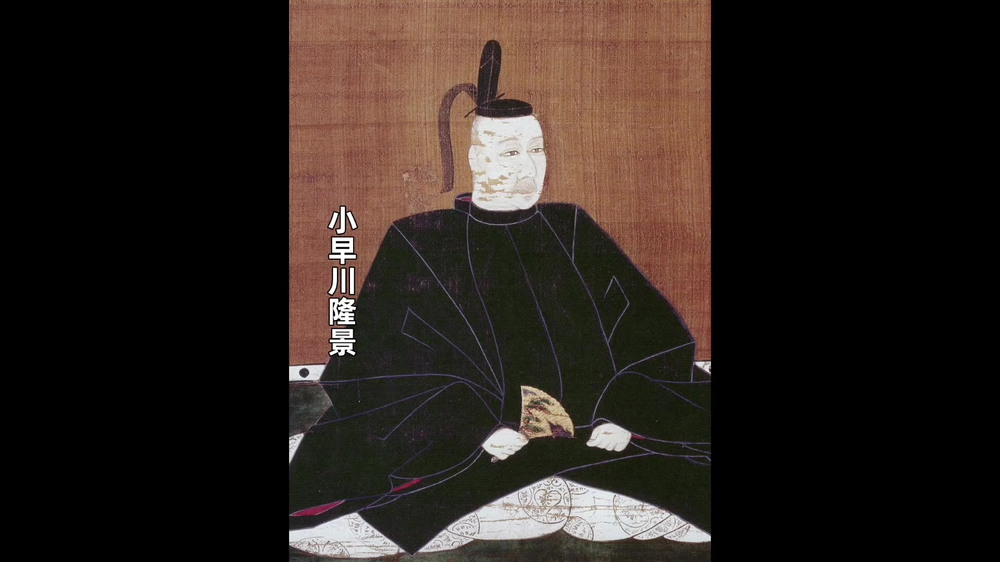
這時候小早川隆景的兵力也已經集結完畢，他率領4萬日軍全部開往礫石嶺戰場。孫守廉、祖承訓等將領看到漫山遍野的日軍，至少比自己的兵力多10倍，他們就心生畏懼，帶領部隊主動後撤。
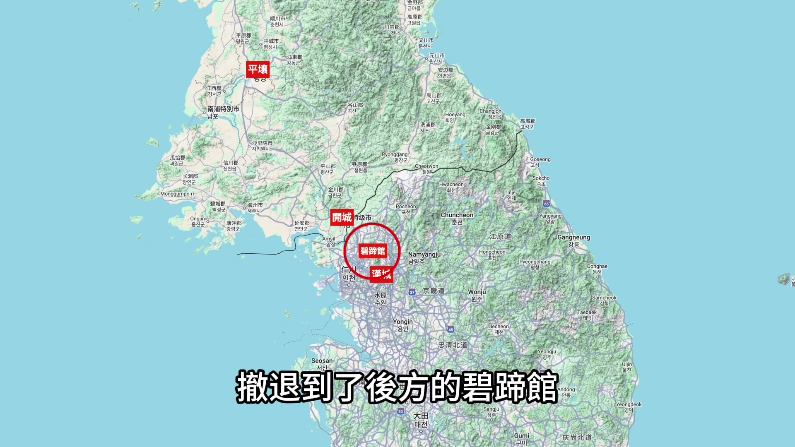
撤退到了後方的碧蹄館，小早川隆景指揮部隊對退守到碧蹄館的明軍展開包圍。查大受再次派出使者給李如松報信，告訴李如松真實情況，告訴他日軍並沒有棄城逃走，而是出動了4萬大軍包圍了碧蹄館。
李如松在接到這第二份戰報的時候，他已經在趕往碧蹄館的路上了。由於他之前輕信了前面的情報，他只帶了2,000騎兵出來，而且路上他還進行了分兵，他分兵的時候還不知道日軍的真實情況，他是收到了前面的信息要去漢城外做偵查，所以才分兵。他自己親自率領1,000騎兵快速行軍要到前面偵查，他讓他的大將楊元率領後繼部隊1,000騎兵慢慢走作為接應力量。現在再接到查大受的第二份情報，李如松已經知道了日軍的真實情況，但是他也並沒有後撤，而是加速往前衝。正常來說，李如松只帶了1,000名騎兵，前方日軍有4萬大軍，兵力相差10倍以上，他應該立刻撤回去集結大軍再來打，但是李如松並沒有。他是真的很勇，後來有學者把李如松形容成是明朝的霍去病，在這個關鍵點上還真能看出來，他真有點像他帶著1,000人就敢往前衝。李如松往前衝有兩個原因，一個是他對他自己將領的情誼，查大受等將領都是追隨李家多年的骨幹，李如松把他們當親兄弟一樣看待，他不能眼看著這些兄弟被圍困而不去救。第二個原因是李如松這也是一種戰術，他帶領部隊往前衝，想造成一種明軍大部隊已經趕來支援的假象，讓日軍摸不清虛實，他想把日軍給嚇回去。不管怎麼說，李如松是真的很勇敢，他率領1,000人就衝進了敵人的包圍圈，開始跟日軍血戰。
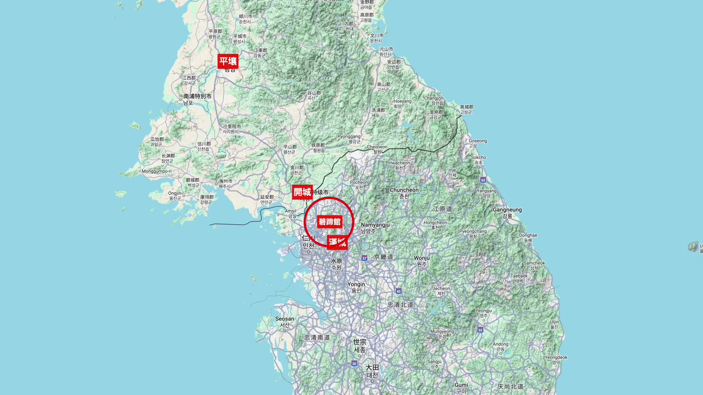
碧蹄館血戰雙方殺得昏天暗地，不過明軍的騎兵再勇猛也抵不過日軍十倍的兵力。
00:40:00
逐漸明軍落入下風，兩軍交戰的過程中，李如松遭到日軍的圍攻，十分危險。在最危險的時刻，他的家將李有升挺身救主，力戰而死。李有升戰死之後，危機還沒有解除，這時候還好後方的楊元及時率領部隊趕來救援。當時李如松不是分兵嘛，他讓楊元率領1,000名騎兵在後方應援，還好有他當時留下的這1,000人在李如松馬上要挺不住的時候，楊元率領這1,000人趕來救援。楊元是李如松手下的大將，他非常懂心理戰，他鳴放火炮震懾日軍，讓日軍以為明軍的大部隊來了，日軍擔心被明軍反包圍，他們見好就收撤回漢城，李如松這才得以脫困。他回去之後因為李有升等將領陣亡，他非常悲痛，徹夜痛哭。
這場碧蹄館血戰，日軍和明軍其實說不止是誰勝誰敗、誰贏誰輸。因為如果從明軍進攻、日軍防守的角度來看，自軍是打退了明軍，算是日軍獲勝。但是要是從戰損情況來看，明軍陣亡1,000多人，明軍比日軍的損耗要小的很多，其實可以算明軍獲勝。而且明軍以4,500人對戰日軍4萬人，能殲滅那麼多日軍還能全身而退，這點讓日軍的士氣再次受到打擊。
其實這場戰役還有一個問題需要說明一下，就是李如松帶到朝鮮的兵力有3萬多人，而且大部分都是騎兵，他為什麼只帶了幾千人到碧蹄館戰場？既然都是騎兵，速度就不是問題，他為什麼不帶大隊騎兵前往戰場？之前我們說了一個原因是李如松他由於情報失誤誤判敵情，這只是一方面原因，還有一個更重要的原因是明軍的戰馬大批死亡，這個我們就需要說一下。
由於戰線拉長，後方補給出現嚴重問題。按照大明和朝鮮的約定，明軍在進入朝鮮之後應該由朝鮮方面負責明軍的糧草供應，運輸的勞役也應該由朝鮮方面來出。但是實際情況是朝鮮因為國生淪陷，朝鮮的行政陷入嚴重癱瘓，他們根本就收集不來足夠的糧草。明朝朝廷就沒有辦法，萬曆多次賜給朝鮮白銀，讓朝鮮政府花錢買糧草，但是即使給朝鮮錢，朝鮮政府也買不來足夠的糧草，因為朝鮮的運輸已經癱瘓了。明朝朝廷沒有辦法，只能自己在國內徵集糧草，然後運輸到朝鮮境內。明朝的後勤把糧草運輸到朝鮮境內之後還是有問題，因為把糧草運到大軍的前線還是需要朝鮮的民夫。朝鮮政府組織不起來有效的運輸，就導致大量的糧食堆積在後方運不上去，尤其是在明軍打下平壤之後，戰線拉長，糧食更是運不上來，這就導致前線的士兵極度缺糧。
明軍出動的都是騎兵，騎兵最重要的就是戰馬。要不是實在餓的忍不下去了，誰也不忍心殺死自己的戰馬。這是導致明軍損失了很多戰馬。還有後方補給運不上來，人沒有糧食，馬也沒有草料，還燒毀了沿途所有的草木，導致明軍的戰馬完全沒有草料可以吃。缺少草料再加上當時軍中馬疫流行，就導致明軍的戰馬死亡了12,000多匹，死了12,000多匹戰馬，剩下的戰馬也非常瘦弱，承載不了長途行軍。這是李如松沒有辦法帶大部隊快速往前行軍的最主要的原因。而且由於補給跟不上，明軍也沒有辦法再繼續往下打了。
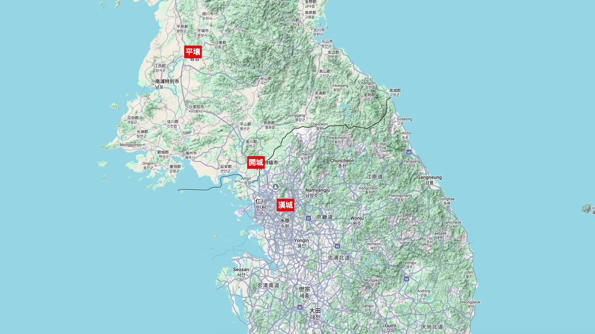
碧蹄館戰役之後，李如松主動放棄開城，率領部隊直接退回到了平壤，開始準備跟日本和談。明軍這邊打不下去了，日軍其實也打不下去了。日軍一方面是後方的補給線被切斷，糧草供應不上，還有一個方面日軍通過平壤戰役和碧蹄館戰役見識到了明軍火炮和騎兵的威力，日軍對明軍的實力產生畏懼，全軍的士氣低落，厭戰情緒蔓延。豐臣秀吉在接到前線的戰報之後，他也意識到征服大明是不現實的，再加上日本國內當時也出現了不穩定的情況，豐臣秀吉就也同意和談。接下來就是雙方長達三年半的和談。
這場和談可以說是一場超級大騙局，明朝方面負責和談的還是沈維敬，日本方面負責和談的也還是小西行長。沈惟敬、小西行長加上兩邊的將領為了不再繼續打仗，居然聯手欺騙兩邊的君主。這些人編的謊言可以說是越來越離譜。首先碧蹄館戰役的情況，明軍將領向萬曆皇帝彙報的和日軍將領向豐臣秀吉彙報的就完全是不實信息。我們先說明朝這邊，明朝這邊的主帥是宋應昌和李如松。
00:45:01
明軍在碧蹄館被日軍打退之後，宋應昌和李如松向萬曆彙報的居然是「碧蹄館大捷」。他們說明軍在碧蹄館以少勝多打敗了數萬日軍。既然彙報的是「大捷」，他們就得解釋為何打赢了反而大軍後退、沒有乘勝追擊。宋應昌說明後退是因為後勤補給跟不上，馬匹需要草料，大軍需要休整，這個說法倒是實情。關於和談，宋應昌表示和談是日本主動來乞求投降，因為日本被打敗了、被打破膽，所以乞求明朝皇帝給他們進行封貢。
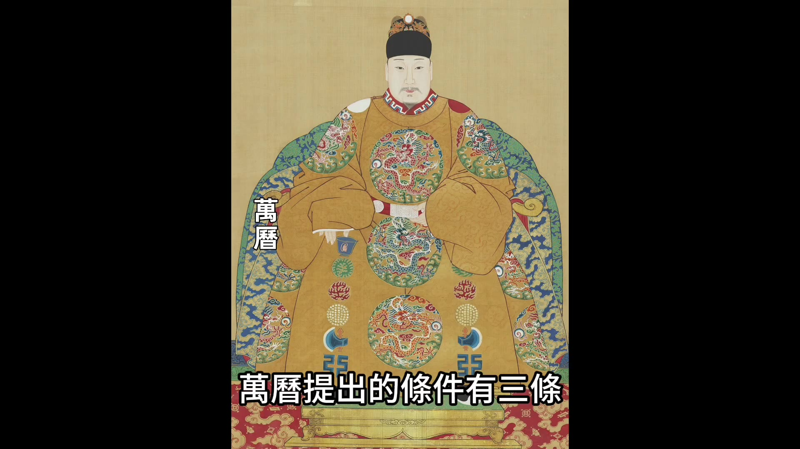
日本方面將領也把碧蹄館戰役說成是自己獲得了大勝，而且他們彙報的更誇張。為了誇大戰績，他們居然說自己擊敗了明朝的正百萬大軍，斬首明軍三萬多人。關於和談，他們也說是明朝戰敗了、害怕了，來乞求投降。明朝的前線將領和日本的前線將領居然不約而同地欺騙自己的君主，導致萬曆和豐臣秀吉都認知錯位，都認為自己是戰勝方，都認為是對方來乞求投降的，所以這兩個君主都以一副獲勝者的姿態來提和談條件。
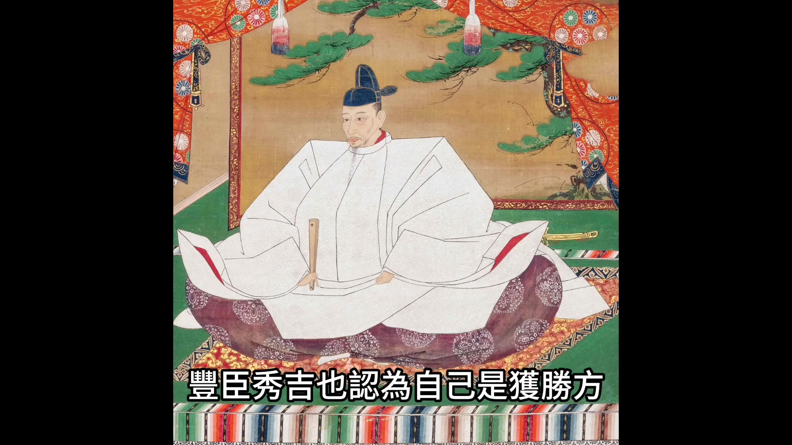
萬曆提出的條件有三條：第一條是要求日軍全部撤離朝鮮；第二條是讓日本發誓永遠不再侵犯朝鮮；第三條是允許日本成為大明的藩屬國，可以冊封豐臣秀吉為日本國王，但不允許通貢。我們看啊，萬曆完全是以天朝的「施恩者」姿態在提要求。豐臣秀吉也認為自己是獲勝方，他也以勝利者的姿態提出七條要求：第一條是大明公主下嫁，要求大明皇帝的一位公主嫁給日本天皇作為兩國和親的誓約；第二條是恢復勘合貿易，這條是日本最在意的；第三條是大臣交換誓詞，就是大明和日本兩國的高級官員相互交換誓詞；第四條是中分朝鮮領土，把朝鮮的八道一分為二，平安把朝鮮北方的咸鏡、江原、黃海四道還給朝鮮國主，京畿四道而南方的慶尚、忠清、全羅割讓給日本；第五條是朝鮮送入人質，朝鮮方面需要送一位沒被生擒的王子作為人質送到日本；第六條是放還朝鮮王子，這條是作為上一條的回報，日本答應放還之前生擒的兩位朝鮮王子；第七條是朝鮮大臣宣誓，要求朝鮮的大臣向日本提交宣誓書，保證世世代代永不背叛日本。
我們看萬曆和豐臣秀吉提出的要求根本就是自說自話，兩方是不可能有任何妥協的空間。萬曆說讓日本全部撤離朝鮮，豐臣秀吉說要分一半的朝鮮領土；萬曆說允許日本成為大明的藩屬國，豐臣秀吉要的是日本和大明是兩個平等的國家；萬曆說不允許通貢，豐臣秀吉要的是恢復勘合貿易；豐臣秀吉要大明公主下嫁給日本天皇，這更是萬曆不可能答應的。
面對這種情況，談判要怎麼繼續談，就看沈惟敬和小西行長的了。沈惟敬和小西行長這兩個人，他倆是既有共同的目的，又有各自的利益。兩人共同的目的是和談的局面一定要穩住，一定要維持住，仗是不能再打了。他倆各自的利益呢，就是盡可能爭取對自己方有利的條件。
比如說第一輪談判，第一輪談判是龍山倉談判，談判之後沈惟敬居然做到了讓小西行長同意日軍主動退出漢城，日軍退到慶尚道南部的沼海地區，明軍兵不血刃就收復了漢城。對於小西行長來說，其實日軍撤出漢城也是一種解脫，因為日軍的糧草已經耗盡，補給線又跟不上，日軍的士兵厭戰情緒很嚴重，再不撤兵其實很危險，跟明朝逢成一些共識然後撤退，這也是一種體面的撤退。
再說第二輪談判，第二輪談判沈惟敬和小西行長就要面對萬曆和豐臣秀吉提出的條件了。豐臣秀吉提出的條件，沈惟敬根本就不敢跟萬曆彙報，甚至他都不敢讓京城的官員知道，因為沈惟敬知道如果把豐臣秀吉的要求如實彙報，不管兩邊是不是繼續開戰，反正他是肯定是死罪難逃。沈惟敬居然說服了小西行長，他和小西行長合謀偽造了一份豐臣秀吉向明朝謝罪的投降書，這份投降書叫「關白降表」，「關白降表」的語氣很卑微，表示日本願意臣服大明，並且請求冊封。
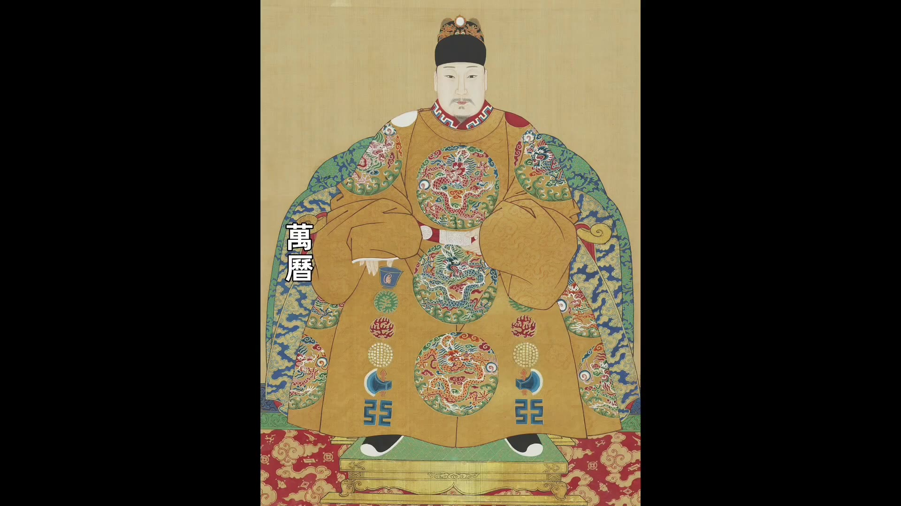
00:50:00
萬曆收到降表之後認為日本已經完全臣服了，他就下令冊封豐臣秀吉為日本國王，但是他還是拒絕了通貢的要求。萬曆拒絕通貢這點其實小西行長是很在意的，他最在意的就是通貢。現在萬曆明確表示不同意通貢，小西行長其實內心很不滿意。沈惟敬很瞭解小西行長的這種心理，沈惟敬就勸他，勸他說現在咱們雙方首要的訴求是結束戰爭，不要再開戰，至於通貢咱們可以通過運作先讓豐臣秀吉接受了冊封。通貢一般都是先冊封再通貢，日本要是接受大明的冊封了，然後讓日本派出使者到大明去謝恩，謝恩的時候再向大明皇帝請求通貢，大明的皇帝就很有可能答應。小西行長也只能同意沈惟敬的說法，因為面對當下的情況他也沒有辦法改變，他只能同意一步一步來。
我們再看豐臣秀吉的其他條件，豐臣秀吉的條件裡面有一條是大明公主下嫁日本，這條沈惟敬當然也不能如實彙報。他一開始想的是在民間就找個民女把這個民女假扮成大明公主送到日本，但最終呢他也不敢真找個民女去假裝，他就又撒了個謊。他跟小西行長說說大明公主本來已經出發了，但是由於路途遙遠在途中不幸生病去世了。沈惟敬說作為不能成親的補償，大明方面願意向日方贈送300匹戰馬作為補償。小西行長向豐臣秀吉彙報情況，豐臣秀吉也相信了公主病逝的這個謊言，並且接受了300匹戰馬作為補償，這條要求就算是蒙混過去了。
沈惟敬和小西行長的談判就這麼一點一點推進，他們撒了這麼大的彌天大謊，都知道謊言早晚都有拆穿的一天，但是他們也只能靠拖時間來維持。沈惟敬知道謊言拆穿的時候就是他自己被處死的時候，所以他用一個謊言去圓上一個謊言，謊就越撒越離譜，只是為了拖延時間。小西行長也是一個想法，小西行長還有-他在等豐臣秀吉去世，豐臣秀吉這幾年的身體一直都不好，他想拖到豐臣秀吉去世，這場戰爭自然也就會不了了之了。但是他們最終也沒等到豐臣秀吉去世，談判維持了三年半之後，謊言還是被揭穿了。謊言被揭穿是萬曆派使者到日本去冊封，在冊封儀式上，當豐臣秀吉知道明朝皇帝只是封他為日本國王，而且明朝皇帝對朝鮮割讓領土等要求只字未提的時候。
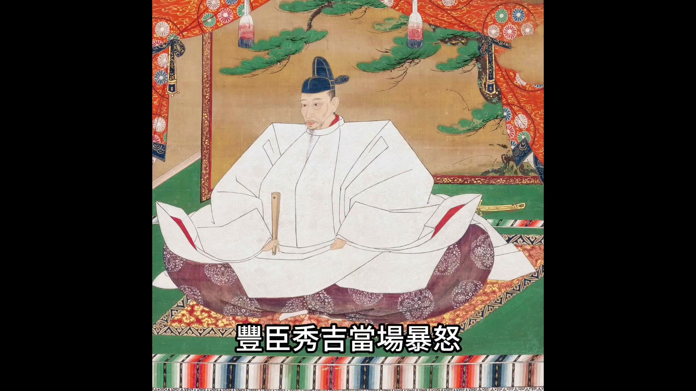
「丁酉再亂」是在萬曆二十五年開始的，日本方面豐臣秀吉派出陸軍14萬人、水軍22,000人進攻朝鮮，明朝方面萬曆一開始派出的是將近4萬人進入朝鮮，後來增兵到9萬人，朝鮮方面也有2萬官兵協同作戰。這場戰爭歷時將近兩年，從萬曆二十五年正月一直打到萬曆二十六年十一月，期間打了很多場大戰，比如說有漆川梁海戰、有南原之戰、蔚山戰役、露梁海戰等等，這些戰役雙方有勝有負。總體來說戰爭可以分為四個階段。
第一階段是戰爭初期，日軍在陸地上攻陷了全羅道和忠清道，兵鋒直指漢城，日本的海軍也獲得勝利，一度控制了制海權。戰爭第二階段，明軍和朝鮮的聯軍通過穋山戰役、鳴梁海戰等戰役逐漸遏制了日軍的攻勢。戰爭第三階段，兩軍陷入到僵持階段，而且雙方內部也都出現問題，明軍內部是出現了南兵和北兵的內鬥問題，日本方面是因為豐臣秀吉病重，豐臣秀吉病重軍隊內部的厭戰情緒就十分嚴重。戰爭第四階段是總決戰，在這個階段日本方面的豐臣秀吉已經病逝了，豐臣秀吉病逝之後日軍是士氣全無，日本國內的「五大元老」就下令撤兵，明軍將領抓住這個時機組織9萬大軍發起總攻，最終日軍損失慘重，殘部倉皇逃回日本，丁酉再亂就此結束，萬曆期間的朝鮮戰爭也到此結束，以明朝和朝鮮獲勝結束。其實這場戰爭的結束也可以說是以豐臣秀吉的死亡而結束。
00:55:00
數字差異其實很大，我們選取的是學界綜合各方面記載認為相對可靠的數字。明朝損耗最小，明軍陣亡在2萬人左右，日軍陣亡人數遠遠超過明軍，日軍陣亡超過10萬人。朝鮮最慘，朝鮮不光是官軍陣亡，由於戰場是在朝鮮，朝鮮死了大量的平民。根據記載，到戰爭結束的時候，朝鮮全國的人口銳減至戰前的1/6。朝鮮為什麼死這麼多人？他們不僅打官軍，對朝鮮平民也進行了多次殘忍的大屠殺，甚至是屠城。比如說，日軍在攻陷釜山城之後，他們殘忍地殺光了城內的所有男女，殺了3萬多人，甚至連貓狗都沒放過。日軍在東萊、在慶州、南原、全州都展開過大屠殺。日軍屠殺之後，隨之就會爆發大飢荒和大疫病的流行，這導致戰爭結束的時候，朝鮮的人口銳減至戰前的1/6。所以這場戰爭給朝鮮帶來的傷害非常大。
我們再看日本方面，發動這場戰爭對日本來說是一場傾盡了全國之力的豪賭，最終戰敗了，給日本也帶來了嚴重損失。首先，日本死在戰場上的就有超過10萬軍人，這是一個重大損失。第二，長達7年的跨海遠征也耗光了日本的國力。為了戰爭，豐臣秀吉抽調了日本國內大量的青壯勞動力，導致日本大量的農田荒廢，糧食產量銳減。為了籌集軍費和糧食，豐臣秀吉對日本農民還實施了嚴酷的壓榨，沈重的賦稅引發了日本國內的多次農民起義。第三，這場戰爭嚴重的損耗了豐臣秀吉家嫡系的實力，導致在豐臣秀吉死了之後，日本內部矛盾激化，爆發了關原之戰。關原之戰導致豐臣秀吉政權覆滅，德川家康崛起，開啓了江戶幕府時代。
這場戰爭給明朝帶來的損失也不容忽視。明朝方面陣亡2萬人，人數雖然不是很多，但是這2萬人全部都是明軍的精銳，而且有很多高級將領陣亡，這對明朝來說也是很大的損失。更重要的是，七年戰爭耗費了明朝883萬兩白銀和數十萬石糧食。這筆錢可不是個小數字，張居正給萬曆攢下的家底幾乎全部都被耗盡了，這直接導致萬曆開始另立明目給老百姓加稅，這加重了全國老百姓的負擔。
不過有一種觀點，這種觀點是說這場萬曆朝鮮戰爭極大的消耗了明朝的國力，導致明朝不能控制女真的崛起，甚至導致了明朝的滅亡。關於這種說法，我們認為這場戰爭只是導致明朝滅亡的一個因素，明朝滅亡是多重因素疊加的結果。這場戰爭的消耗確實不小，但是要是跟明朝後續跟女真的戰爭相比，耗費也不算很多。後來明朝跟女真的戰爭前後耗費高達6,000多萬兩白銀，這是這場朝鮮戰爭的7倍之多。而且這場戰爭消耗的這800多萬兩白銀是在七年的時間內消耗的，如果分攤到每年，也就是每年100多萬兩，100多萬兩的戰爭花費應該屬於明朝每年正常的財政範圍之內的。而且我們從明朝的角度來看，也不能只看消耗了多少國力，也要看給明朝帶來了什麼意義。通過這場戰爭，明朝確立了在東亞的宗主國權威，保衛了遼東屏障，而且他震懾了日本，換來了東北亞300年的相對和平，這個也很重要。好了，今天的故事就講到這裡，我開通了「1921-1945年的專題歷史課程」，有興趣的朋友歡迎點擊影片下方鏈接瞭解，歡迎大家點贊關注。
00:00:00
大家好今天我們講萬曆朝鮮戰爭萬曆朝鮮戰爭是在萬曆年間日本入侵朝鮮
明朝援助朝鮮三個國家在朝鮮境內打的一場戰爭這場戰爭歷時7年打的時間很長這場戰爭也是有史以來日本第一次以國家力量對朝鮮發起戰爭以前日本對朝鮮一直也都有騷擾但都是小股的海盜進行搶劫都是搶完了就跑這次不一樣
這次是豐臣秀吉統一日本之後他集結了日本全國的力量發動了正式戰爭他們不只是搶劫是要把朝鮮變成日本的殖民地而且豐臣秀吉的目標還不僅僅是朝鮮他是要把朝鮮當做跳板進攻大明甚至進攻東南亞後來二戰時期日本略亞洲的思根在很大程度上就可以追溯到豐臣秀吉
豐臣秀吉的計劃是第一步先佔領朝鮮把朝鮮作為跳板第二步是征服大明征服大明之後把大明的領土切分成小塊然後分給日本的功臣然後他還要遷都北京
第=步是他在浙江寧波指揮日軍繼續征討征討天竺和南蠻天竺就是印度南蠻就是指東南亞我們看在二戰時期日本的擴張版圖跟豐臣秀吉當時的計劃是驚人的相似所以日本吞併亞洲的野心是可以追溯到豐臣秀吉的不過豐臣秀吉的野心被當時的大明直接給擊潰了
明朝到萬曆年間其實已經是晚期了已經不是國力最強的時候了但是還是擊敗了野心勃勃的豐臣秀吉朝鮮方面呢朝鮮因為明朝的援助避免了亡國之災朝鮮君臣從上到下把明朝的援助都稱作是「再造之恩」他們聲稱要「百世不忘」朝鮮還真是做到了百世不忘明朝滅亡之後朝鮮在清朝的軍事壓力之下雖然是不得不臣服於清朝但是朝鮮在內部他們始終還是維持著對大明的追思在明朝滅亡之後
朝鮮建了一個「大報壇」他們建『大報壇」就是為了紀念明神宗萬曆來表達對這場「再造之恩」的永世不忘還有關於年號的使用朝鮮應該改用清朝年號但是朝鮮並沒有朝鮮對外他對清朝的外交文書上用的是清朝年號但是他們的士大夫在自己國內的文件面用的還是明朝崇禎的年號崇禎是1644年就死了正常來說他死了之後就沒法用崇禎多少多少年了朝鮮居然想了個辦法
他們用崇禎後就是用崇禎後多少多少年
他們一直用這個年號居然用崇禎後用到了崇禎後二百多年可見由於這場戰爭的援助
這場萬曆年間的朝鮮戰爭對明朝對日本對朝鮮都有深刻的影響今天我們就來講講這場戰爭的來龍去脈
我們先說一下日本為什麼要打朝鮮日本要打朝鮮有三方面原因
一方面是豐臣秀吉他個人野心的膨脹在豐臣秀吉統一日本之前日本是經歷了長達二百多年的戰國時代當時日本有所謂的六十六國戰國時代就是六十六國之間打來打去打了二百多年最後是豐臣秀吉完成了目本的統豐臣秀吉統一日本之後當然覺得自己很牛他就野心膨脹他想征服的不止局限於日本本士他想一統天下一統天下就包括征服朝鮮征服大明甚至征服其他東南亞國家這是豐臣秀吉的野心除了野心之外可能還有一個心理動機
就是他的出身不好他雖然統一了日本但是在日本貴族眼裡面他還是缺乏『正統性」所以他要通過征服更強大的大明來證明自己值得被尊敬這是第一個原因豐臣秀吉他個人的原因第二個原因是轉移日本國內的矛盾衝突豐臣秀吉當時面臨一個窘境就是「無地可封」豐臣秀吉雖然統一了日本但是他的統一是多方勢力妥協的結果他不是把所有的大名都給滅了很多日本有實力的大名像德川家康、上杉家、毛利家這些實力雄厚的大名他們只是形式上臣服他們的領地都掌握在自己手裡所以豐臣秀吉能掌握的土地很有限他掌握的土地有限那些追隨他打天下的文臣武將為的是什麼呀為的就是立功之後可以獲得更多的封地現在豐臣秀吉沒有足夠的主地分給他們如果這個問題解決不了的話他這個剛剛建立的政權很可能很快就會分崩離析所以豐臣秀吉向海外擴張他這是把內部矛盾轉向外部國內的土地既然不夠分就去搶海外的土地
00:05:01
這是他打朝鮮的直接動機向外發動戰爭還有一個好處就是國內那些不聽他話的大名剛才我們不是說了嘛有很多實力雄厚的大名是名義上歸順實際上豐臣秀吉控制不了他們這些大名對豐臣秀吉來說是有威脅的豐臣秀吉通過對外戰爭把全國都發動起來當然也包括他們這樣就可以把這些不聽話的大名的軍事實力損耗在海外豐臣秀吉的統治就可以更加穩固這是第二個原因豐臣秀吉想轉移國內的矛盾第三個原因是經濟原因日本國內有很多支持豐臣秀吉政權的經商家族他們想要打破明朝對日本的封鎖恢復勘合貿易勘合貿易就是明朝跟其他國家的朝貢貿易就是日本想讓明朝開放對自己的朝貢貿易
明朝在隆慶開關之後其實已經開放了對全世界的海外貿易但是唯獨拒絕向日本開放明朝拒絕日本有兩方面原因一方面是倭寇的影響嘉靖年間倭寇作亂實在是給東南沿海造成子很大損失所以明朝認為日本人貪婪無厭就拒絕跟他們貿易第二方面是明朝當時的「俺答封員」已經讓朝廷每年花費數百萬兩白銀如果再允許日本通貢要花費的費用肯定也不是個小數字通貢對於明朝朝廷來說其實是一個花錢的事所以從經濟角度來考慮明朝也不希望開放跟日本的朝貢貿易明朝拒絕跟日本貿易但是日本有一些商品還必須要從明朝進口比如說陶瓷還有茶葉等等除了這些日用商品之外日本也需要從明朝進口比如說硝石比如說鉛等原材料日本當時的軍隊大量使用火繩槍火纙槍的彈藥就需要這些原材料而日本國內的產量很低他們主要就是依賴從明朝進口明朝拒絕跟日本貿易日本又需要明朝的這些商品他們就只能被迫的從澳門的葡萄牙人手裡購買葡萄牙人從明朝手裡面買出來再轉手賣給日本人這樣日本商人就要承擔高昂的轉手費和運費所以那些跟豐臣秀吉政權結合的日本富商他們就希望通過戰爭打破明朝對日本的封鎖恢復勘合貿易這三點原因豐臣秀吉的個人野心轉移國內的矛盾和恢復勘合貿易就是日本發動這場戰爭的主要原因其實我們能看出來日本的主要目標是明朝
並不是朝鮮但是沒辦法由於朝鮮的地理位置日本注定要先打朝鮮所以豐臣秀吉在給朝鮮發通牒的時候說的是讓朝鮮臣服他們要借道朝鮮進攻明朝他們攻打明朝的先鋒這場朝鮮戰爭分為三個階段第一階段是萬曆二十年到萬曆二十一年是日本第一次入侵朝鮮按照朝鮮的叫法「壬辰倭亂］這個階段的戰爭叫做第二階段是萬曆二十一年到萬曆二十四年是明朝和日本的和談時期第三階段是萬曆二十五年到萬曆二十六年是日本第二次入侵朝鮮叫「丁酉再亂今天我們先講第一階段的戰爭「壬辰倭亂」
豐臣秀吉為了發動這場戰爭他派到朝鮮的總兵力有超過20萬人20萬人分水軍和陸軍水軍有9,000多人擁有700多艘戰船和2,000多艘輔助船陸軍第一批渡海的有15萬人分為9個軍後續還有5萬多人作為增援部隊
700多艘戰船2000多艘輔助船載著日本陸軍聲勢浩大的登陸朝鮮而朝鮮方面幾于沒有任何防範日本在入侵朝鮮之前豐臣秀吉其實多次向朝鮮發出了通知和通牒但是朝鮮還是沒有防範朝鮮沒防範主要原因是當時朝鮮處於黨爭的狀態兩個黨一爭就把防範的事給耽誤了朝鮮當時有兩個黨一個叫西人黨朝鮮的黨爭跟明朝的黨爭就很像兩派什麼都爭=派要幹點什麼事另外一派一定會找出理由來反對這次日本向朝鮮發出通牒豐臣秀吉派出好幾撥人前來通知接到通知之後朝鮮的西人黨就說說倭寇要打過來了我們要防範東人黨立刻就反對東人黨說倭寇有什麼可怕的根本不足為懼朝鮮這兩個黨為了反對而反對天天爭論不休誰也沒去認真做個調研誰也沒去看看日本到底會不會打過來到底日本的軍力強不強大這些有用的事他們一點都沒幹所以當日本大軍打過來的時候朝鮮幾乎就是毫無準備朝鮮不僅毫無準備他們軍隊也是非常虚弱因為朝鮮已經享受了200多年的和平了200多年没打過仗士兵平時也不怎麼訓練日軍打過來之後朝鮮軍隊沒怎麼抵抗就全跑了
00:10:00
戰爭爆發僅僅20天朝鮮的首都漢城就淪陷了僅僅43天朝鮮就三都失守八道瓦解
三都指的是朝鮮最核心的二座城市一個是首都漢城一個是松都開城還有一個是西都平壤八道淪陷八道指的是朝鮮的行政區域的劃分就類似於明朝的行省當時朝鮮全國分為八個道三都失守八道淪陷之後朝鮮國王就逃到了最北邊
逃到了靠近明朝邊境的義州開始向明朝求援
明朝收到朝鮮的求援之後除了討論要不要救援之外重點討論的是朝鮮是不是跟日本有所勾結因為戰爭爆發之後遼東地區有很多謠言這些謠言說朝鮮已經跟日本達成了秘密協議準備聯手入侵明朝說朝鮮的求援只是想引誘明軍進入朝鮮然後在朝鮮境內把明軍給殲滅這些謠言是怎麼傳出來的是豐臣秀吉給朝鮮的通告裡面曾經說過說讓朝鮮跟他們一起打大明不過當時朝鮮並沒有同意朝鮮雖然沒有同意但是豐臣秀吉給其他國家的國書裡面提到過這個事比如說琉球日本給琉球的國書裡面就提到過說他們已經跟朝鮮商量好了一起攻打大明攻打大明的時候還讓朝鮮的兵作為先導部隊琉球接到日本的國書之後他就把這個事報告給了明朝明朝一看朝鮮跟日本居然有使節往來而且這麼重要的情報朝鮮怎麼不提前報告等到日本打進來了你才來求援這個事是不是有問題就很值得懷疑而且你朝鮮怎麼敗得這麼快43天就全國淪陷了這種潰敗的速度也很讓人懷疑懷疑你到底是不是主動在給日本人讓路所以明朝對朝鮮就充滿了不信任但是面對這種懷疑明朝並沒有直接拒絕而是採取了非常謹慎的偵查措施明朝的兵部尚書石星他派出好幾波使者到朝鮮境內探查情況這些使者是分批去的有的是明面上的官員動用明面上的身份去勘察也有的是暗中探訪的錦衣衛這些使者的探訪結果回來一彙報
基本上都證實了朝鮮說的是實話日本確實是打過來了而且朝鮮沒有跟日本勾結證實了朝鮮沒有問題之後明朝開始援助朝鮮明朝為什麼會援助朝鮮有兩方面原因第一個原因是宗藩體系宗藩體系就是明朝是宗主國朝鮮是明朝的藩屬國這個意思就是明朝你是大哥朝鮮是小弟小弟被人欺負了大哥一定要出手大哥要是不出手以後誰還認你當大哥你就失去信任了不僅朝鮮不會認你其他小弟也不會認了明朝這個宗藩體系就會瓦解而且用大哥和小弟來比喻都說得輕了朝鮮自己在文書裡面經常把明朝比喻成是父親把自己比喻成是兒子
朝鮮國王李昖還曾經公開提出過「孝子說」說朝鮮是大明的孝子說自己待奉大明就像兒子侍奉父親一樣而日本是賊子面對這麼一個孝子來求援明朝要是不救在道義上面就說不過去第二方面從地緣政治來看因為很明顯朝鮮跟遼東接壤日本打完朝鮮直接就能打到遼東打到遼東就是打進大明了而且日本在文書裡面都說了他們是借道朝鮮借道的目的是為了打大明所以這場戰爭大明無論如何是躲不了的既然躲不了在朝鮮境內打總比在自己境內打要好所以支援朝鮮肯定是最好的選擇當時明朝內部對於是否出兵援助朝鮮爭議還是很大但是在最關鍵的時刻萬曆起到了決定性作用
萬曆乾綱獨斷拍板決定支援朝鮮
明朝決定支援朝鮮但是當時明朝在寧夏還在打仗明朝的哱拜之亂還沒有平定所以明朝先派出一個先遣部隊進入朝鮮去試探一下日軍的實力看看能不能用先遣部隊就把平壤給奪回來率領這支先遣部隊的人是祖承訓祖承訓的職務是遼東副總兵這個祖承訓他是軍人世家他家族從朱元璋時代開始就跟著朱元璋打仗然後世代從軍所以祖承訓是一個軍事能力很強的將領而且他是鎮守邊疆常年打仗他這個副總兵的職務是他一級一級靠戰功打出來的他有豐富的作戰經驗我們再多說一句後來的名將祖大壽就是祖承訓的兒子祖承訓率領的3,500人也是遼東精銳騎兵他率領著這3,500人進入朝鮮之後
快速行軍很快就趕到了平壤城下然後直接就攻城他攻城當天天上還下著雨祖承訓冒雨攻城有人就勸祖承訓
00:15:00
說下雨不適合攻城下雨給日軍來個突襲祖承訓的策略還真是對的日軍果然沒反應過來日軍打探到明朝的援軍進入朝鮮了但是沒想到援軍來的這麼快而且他們沒想到明軍居然會冒雨攻城結果就是日軍連城門都沒關明朝沒用攻城直接就衝到平壤城內了進城之後讓祖承訓沒有想到的是日軍在城內的人數遠遠超出他的情報朝鮮給祖承訓提供的情報是日軍在平壤城內只有一兩千人日軍的人數至少有15,000人甚至可能達到2萬人日軍被攻破城門打了個措手不及之後立刻調整戰術展開伏擊戰和巷戰明軍沒想到日軍有這麼多人一下有點懵而且平壤城內的街道很狹窄很適合日軍打伏擊
日軍找各種掩體用火繩槍襲擊明軍明軍的先鋒將領是史儒史儒身先士卒衝在最前面沒想到他被日軍的火繩槍給射死了史儒死了之後明軍陣腳大亂開始潰敗祖承訓一看形勢不妙他就率領部隊撤出城門往回跑這第一場明軍和日軍的戰鬥以明軍戰敗結束這一仗戰敗有兩個主要原因一個是祖承訓輕敵個是朝鮮給的情報有誤祖承訓輕敵是他根本就沒把日軍放在眼裡祖承訓常年在邊疆跟蒙古人作戰而且屢戰屢勝所以他非常自信對於日本人他根本就看不起他攻城當天甚至部隊連早飯都沒吃他認為完全可以速戰速決他下令說打下城池再吃早飯朝鮮給祖承訓的情報有誤這也是戰敗的主要原因朝鮮給出這個錯誤的情報也有兩方面原因一方面是他們的偵察能力確實有限他們不太知道日軍究竟有多少大還有一個方面原因就是他們想盡快的把明軍給拉入戰場不管明軍能不能打贏反正明軍參與到朝鮮戰場來了為了維護大明的權威明軍就不可能輕易撤兵所以朝鮮即使明知自己的情報不准也把不准的情報提供給明軍這是明軍到朝鮮之後打的第一仗第一場平壤戰役第一仗就是個敗仗打了敗仗之後朝廷雖然把袓承訓給革職了但是通過這次試探萬曆也意識到了日軍並不是那麼好對付的造成的結果就是萬曆開始籌劃第二輪規模更大的援助朝鮮這仗打完之後日軍雖然打贏了
但是日軍反倒開始有點害怕了因為日軍見識到了大明騎兵的威力在此之後圓軍在戰略上開始變得趨於保守不敢輕易再向北推進了
在朝鮮的第一仗戰敗之後按理說明朝應該立刻派出更多的軍隊去朝鮮戰場但是當時寧夏的哱拜之亂還沒有平定明朝不能雙線作戰而且明朝要集結更多的軍隊要集結大軍也需要時間所以明朝就想了一個策略他們派使者去跟日本人和談這個和談實際上是個假意和談是用和談來拖延時間明朝派去和談的使者是沈惟敬沈惟敬是什麼人他並不是官他沒有任何的官職在身在官方眼裡面甚至認為他是一個市井無賴那為什麼選中他呢是兵部尚書石星選出來的沈惟敬石星選他有好幾個原因第一個原因恰好就因為他不是官因為和談在明朝的政治語境裡面是屬於不光彩的行為在當時的朝廷上面的氛圍主戰派一般都被認為是有節氣的主和派都被認為是沒有骨氣甚至被認為是恥辱的所以石星不敢派正式的官員去和談他從民間選個人出來如果和談失敗這個人就可以被作為「棄子』可以隨時犧牲掉這樣可以維護朝廷的體面這是第一方面原因第二個原因是沈惟敬他會日語他是浙江嘉興人他除了會日語之外他還懂很多日本的風俗習慣第三個原因是沈惟敬他口才出眾而且還有膽量這點也很重要你要是沒膽量進入敵軍陣營之後很可能直接就被嚇得說不出話了沈惟敬正是因為他同時滿足了這幾點才被石星所選中派他到日本假意和談我們這麼詳細的來介紹沈惟敬是因為這個人在這場
朝鮮戰爭中是個非常重要的角色他不僅在這次的假意和談裡面起了很大作用在後面長達三四年的和談裡面他也是重要角色沈惟敬進入朝鮮之後他帶著三四個隨從就到平壤城外的乾伏山跟日軍談判我們看在膽識方面他絕對是過關的而且他確實是個談判高手他完全能抓住對方的心理日本方面負責談判的是小西行長
小西行長是日本第一軍團總指揮他負責佔領和防守平壤城
00:20:02
小西行長在這場戰爭裡面也是個重要角色所以我們也再介紹一下他小西行長他是商人家庭出身他的家族是做藥材生意做得很大長期做海外貿易所以他對大明對朝鮮都很熟悉但是也由於他是商人背景他被日本的武士階層所看不起日本當時等級森嚴武士階層普遍看不起商人階層小西行長從軍之後投靠到織田信長旗下隸屬於豐臣秀吉麾下所以他很早就跟隨豐臣秀吉了他一路跟隨豐臣秀吉打仗立下過赫赫戰功他是豐臣秀吉非常信任的心腹將領這次豐臣秀吉出兵打朝鮮
他的第一軍團有18,700人是日軍所有軍團裡面最精銳的部隊他們也是第一批渡海到朝鮮的先鋒部隊他率領第一軍團一路征戰
日軍佔領漢城之後採取的策略是分兵控制朝鮮的八道
小西行長被分配的是負責控制平安道平安道的首府正是平壤小西行長就帶兵攻佔了平壤
平壤是日軍進攻大明的前線基地所以通過讓小西行長負責守衛平壤也能說明小西行長的重要性這次日本方面出面跟沈維敬談判的就是小西行長對了我們還沒說日軍為什麼同意跟明朝談判因為第一次平壤戰爭日軍是戰勝方日軍是打赢了明朝的日軍既然是戰勝方他們為什麼還願意談判日軍同意談判起主要作用的就是小西行長小西行長同意談判有幾方面原因第一日軍雖然在第一次平壤之戰中是獲勝方但是小西行長通過跟祖承訓的遼東鐵騎交手比想象中要強大得多尤其是明軍的勇氣和戰術讓他感到畏懼明軍才來了3,000多人就有這麼大威力明軍要是大軍壓境日軍很可能就打不過第二方面日軍的後勤補給壓力很大日軍打到平壤之後後方的補給線經常遭到朝鮮義兵的騷擾補給跟不上前線一直處於缺糧的狀態朝鮮義兵是朝鮮民間的武裝在朝鮮官軍潰敗之後這些民間武裝為了保護家園
他們也不跟日軍硬碰硬的打他們分布廣地頭熟他們經常切斷日軍的補給線這給日軍的補給造成子很大困擾第三日軍在水路上也受到很大阻礙這場戰爭朝鮮出現一個民族英雄就是李舜臣
李舜臣在打這場戰爭之前他只是朝鮮水師的一個普通將領但是他在這場戰爭的戰場上表現的很出色後來被逐步升為朝鮮水師的最高統帥李舜臣在跟日軍水師對戰的時候展現出來了極高的指揮天賦他既能利用有利的地形打擊日軍又擅長心理戰在李舜臣的帶領下朝鮮水師一次又一次的打敗了日本水師最後日本水師被打的附近的港口不敢出來這樣日本在水上的補紿線就也被切斷了而且水師打不過還帶來一個更重要的問題不光補給線被切斷如果明朝派大軍從正面打過來日軍打不過的話他們還面臨被切斷後路的風險綜合這幾個方面的原因小西行長就認為再打下去對日軍沒有什麼好處而且他是商人出身他參與戰爭的核心動機是恢復明朝和日本的勘合貿易如果通過談判能達成恢復勘合貿易的要求
所以小西行長就同意了跟明朝談判在這之前他已經把戰場的情況都彙報給了豐臣秀吉他是派自己的弟弟小西與一郎回到日本讓他弟弟去勸豐臣秀吉放棄征服明朝的想法他通過各種方法各種角度給豐臣秀吉分析說征服明朝是不可能成功的
豐臣秀吉在得知前線的情況之後尤其是知道了軍隊缺糧嚴重和朝鮮義兵的反抗的情況之後他也意識到了吞併朝鮮和吞併明朝很可能會很困難他的態度也有所轉變他就下令讓日軍各部全部轉入守勢暫時不要擴張一固守已經佔領的地區就可以所以小西行長跟明朝的這場談判是在豐臣秀吉的默許下展開的小西行長提出的核心條件有兩條第一條恢復勘合貿易小西行長他是商人背景他最看重的就是這條的先例他甚至直接引用「俺答封貢」說希望明朝可以給予日本跟給予蒙古俺答汗同樣的貿易待遇第二條他要求劃分朝鮮領士
他提出的是以平壤東面的大同江為界大同江以西屬於朝鮮大同江以東的領土割讓給日本小西行長承諾明朝只要答應了這兩個條件日軍就會退出平壤城
00:25:00
面對小西行長提出的條件沈惟敬一下就能捕捉到關鍵的談判點沈惟敬先是看出來了日軍對明軍的恐懼利用這一點他就嚇唬日軍他說明軍已經集結了70萬大軍70萬大軍即將進入朝鮮明朝大軍來了之後日軍有敗無勝不可能全身而退在恐嚇之後沈惟敬又採取了安撫的策略他看出來了小西行長重視通商他就跟小西行長說說明朝的封貢體系需要先「冊封」才能他說日軍只要退兵天朝不會吝惜給日本封貢的待遇但是需要他回去向皇帝奏報他說他往返向皇帝奏報需要50天時間建議雙方休戰50天小西行長也不見得真的相信明朝會來70萬大軍70萬大軍實在是有點離譜但是沈惟敬的這種說法也符合小西行長的立場因為小西行長本來他就不想繼續打沈惟敬把明軍人數說的越多他不打的這個觀點就越站得佳腳而且沈惟敬給了他一個希望沈惟敬說明朝對日本開放封貢是可以實現的只需要回去彙報一下就行所以小西行長就同意了暫時休戰沈惟敬就是這樣靠連嚇唬帶利誘給明朝爭取了50天的休戰期沈惟敬爭取的這50天時間對明朝來說很關鍵就是在這50天之內明朝從容的結束了西北的叛亂並且把在西北獲勝的精銳部隊調往朝鮮前線沈惟敬的假意和談雖然欺騙性很大雖然被明朝的士大夫們所不齒但是他也確實為明朝打第三次平壤戰爭爭取到了有利的形勢
他的這種騙術在第二次平壤戰爭之前還會再次發揮重大作用好了今天的內容就先講到這裡下期我們再繼續講後面的部分
有興趣的朋友歡迎點擊影片下方鏈接瞭解歡迎大家點贊關注
大家好今天我們繼續講萬曆朝鮮戰爭上期我們講到沈惟敬通過假意和談給明朝爭取到了50天的休戰時間利用這個休戰時間明朝從容的結束了寧夏的哱拜之亂然後調動大軍進入朝鮮準備再打第二次平壤戰役這次明朝派出的主帥
是宋應昌和李如松宋應昌是文臣官職是經略李如松是武將官職是提督明朝一向都是以文御武所以按照官職來說是宋應昌節制李如松但是李如松不是一般人他是遼東世家他父親是李成梁李成梁可以說是萬曆年間的第一名將他是大明200多年裡面唯在世就被授予「三公』勳銜的武將明朝是以文御武而且明朝對勳銜的授予一向都是很吝嗇他作為一個武將在活著的時候就被授予『三公』的勳銜這絕對是破格的也是絕無僅有的殊榮李成梁可以說是達到了明朝武將的巔峰李成梁鎮守遼東20多年家族更是顯赫他的九個兒子出了五個總兵和四個參將號稱「一門九將』
李如松是李成梁的長子他是剛在寧夏平定了哱拜之亂可謂是風頭正盛而且他帶到朝鮮的軍隊正是他在寧夏獲勝的遼東鐵騎這是李如松和他的遼東鐵騎除了李如松之外進入朝鮮戰場的還有副總兵麻貴、董一元李如松的弟弟李如梅。李如柏等等這都是當時明朝的名將除了北方的軍隊之外
還有吳惟忠率領的3,000名南方浙兵吳惟中是戚繼光的老部下因為這次是跟日本人打仗日本人擅長使用火繩槍戚家軍在南方打倭寇打的多很有經驗他們熟悉日本人的戰術和火繩槍他們有專門對付日軍的戰術和陣法他們配備的武器比如說藤牌都是專門對付日軍的這支部隊在朝鮮戰場也將發揮重大作用這是簡單介紹了一下第二批進入朝鮮戰場的明軍這次進入朝鮮戰場的明軍的總人數包括遼東鐵騎包括宣大精銳也包括南方的戚家軍一共是38,937人明軍進入到朝鮮之後第三次朝鮮戰爭即將開始
這次在打仗之前李如松是做了充分的偵查他們對平壤城內的日軍人數和火力情況都有清晰的認識上次明軍戰敗一個主要的原因就是情報有誤這次李如松不僅把情報工作做得很到位而且他還利用沈惟敬給日軍釋放了假消息麻痹日軍李如松讓沈惟敬去跟小西行長說說大明朝廷已經答應了日本提出的和談條件並且派出了使者前來冊封沈惟敬去跟小西行長說了之後
00:30:01
小西行長就真相信了
小西行長一直在等著大明的使者前來冊封放鬆警惕對於大批的明軍進入朝鮮境內毫不知情李如松在即將攻打平壤城之前他還讓沈惟敬去騙小西行長說冊封的使者就要來了讓小西行長出城迎接小西行長派出兩名得力手下率領20多人出城迎接結果遭到了明軍的伏擊損失慘重這時候小西行長才發現自己被騙了才發現大量的明軍已經抵達平壤城下然後明軍開始攻城李如松的戰術是對平壤城北、南三面包圍進攻的西。留出東面不進攻他是故意留出一面不進攻讓日軍有個退路因為如果不給日軍留出退路他們很可能就會死守平壤這樣就會造成明軍過多傷亡他給日軍留一條退路日軍就可以逃跑可以不用拼命死守然後李如松利用他騎兵的優勢在日軍撤退的途中進行截殺這是李如松的戰術然後我們再看明軍攻城的具體情況
平壤城的西面是明軍主力西面有兩個門李如松讓他弟弟李如柏負責攻打普運門讓他的得力大將楊元負責攻打七星門七星門是主政方向李如松的中軍也設在七星門外午壤城的北面有=個牡丹峰牡丹峰是平壞城的制高點非常險要進攻牡丹峰的住務李如松就交給了吳惟忠率領的戚家軍平壤城的南面的主城門是含毬門李如松安排攻打含毬門的是祖承訓和朝鮮軍祖承訓就是第一次平壤戰役戰敗了那個將領上次他戰敗了之後被朝廷革職李如松這次特意把他也帶來給他一個戴罪立功的機會
攻城開始之後西面的戰場明軍的主力在西面用大將軍炮壓制日軍的火繩槍明軍的大炮射程遠威力大自軍的火繩槍完全無法抵抗城牆工事被大量摧毀最終明軍利用火炮直接轟穿城門李如松親自帶頭衝鋒明軍衝進城牆後跟目軍展開巷戰在平壤城的北面吳惟忠率領戚家軍強攻牡丹峰戚家軍非常英勇吳惟忠在戰周中胸部中彈他仍然堅持在陣前指揮最終戚家軍成功佔領了牡丹峰取得了制高點在平壤城南面祖承訓採用了一個偽裝奇襲的戰術祖承訓讓他手下的明軍都穿上了朝鮮步兵的衣服混在朝鮮軍裡面他們對朝鮮軍非常輕視看到朝鮮軍來攻城他們防備就很松懈祖承訓率須部隊接近到城下的時候脫掉朝鮮軍服突然發起猛攻
改破之後也跟日軍展開巷戰
方向作戰都獲得勝利小西行長看勢不妙只能率領著殘部棄城逃跑他們從東面出城渡過結冰的大同江往漢城方向逃跑東面出口是李如松特意給留出來的他當然是早有準備李如松派出騎兵追擊在明軍騎兵的追擊之下^日軍在逃亡的途中再次遭到沈重打擊這場平壤戰役不僅成功收復了平壤還消滅了大量的日軍主力日軍被擊斃超過1萬人小西行長的第一軍團基本被打殘這場戰鬥明軍的實力讓日軍產生畏懼日軍主動收縮防線
放棄開城退到了漢城附近進行防守明軍在平壤大獲全勝之後士氣如虹李如松下—個目標是漢城
他派出副總兵查大受率領一支精銳騎兵先去漢城方向做偵查查大受率領500騎兵一路疾馳他們只用了一天時間就到達了漢城西大門外在漢城西大門附近查大受意外遭遇了日軍的一支巡邏隊兩軍發生交戰查大受的遼東鐵騎表現勇猛很輕鬆就擊敗了日軍的巡邏隊並且殺死了對方63人在擊敗對方之後查大受退到了後方的碧蹄館駐紮
然後他派人回去給李如松彙報情況查大受在信裡面說說日軍鬥志全無他們輕鬆就擊敗了一股日軍他推測漢城裡面的日軍應該也做好了棄城的準備他請李如松親自到前線來探查敵情
這份情報李如松很快就收到了他收到查大受情報的同時他還收到了另外一份情報另外一份情報是前方的朝鮮哨兵傳來的情報朝鮮哨兵傳來的情報說的是日軍已經撤出漢城請明軍盡快前來接管漢城這兩份情報疊加在一起就讓李如松產生了輕敵的心理他相信日軍已經撤離漢城或者準備棄城了於是他就不等大部隊
00:35:01
就快速趕往漢城但是李如松收到的這兩份情報其實都有問題朝鮮哨兵的情報是故意釋放的假情報查大受的情報也是他誤判了日軍的情況查大受他輕鬆就打敗了日軍的巡邏隊就認為日軍已經毫無士氣準備棄城實際上並不是這樣
日軍在漢城裡面總兵力有4萬人兵力並不少在巡邏隊被打敗之後守衛漢城的目軍將領就已經知道明軍要來了對於如何應對他們有很大爭執他們有三種聲音一種是固守漢城一種是棄城逃跑退回釜山還有一種聲音是全軍出擊主動到城外迎敵日軍將領們首先否定了棄城逃走因為日軍在漢城有4萬人人數並不少他們要是一撤日軍辛辛苦苦打下來的朝鮮領土就都沒了還有小早川隆景認為現在日軍士氣低落要是不能通過一場決戰來鼓舞士氣日軍即使撤退也可能在撤退的途中崩潰
小早川隆景是日軍第六軍團的統帥他是日軍名將擁有很高的資歷和聲望他的態度有很高話語權不過小早川隆景他不是日軍在漢城的最高統帥漢城當時最高的統帥是宇喜多秀家宇喜多秀家是豐臣秀吉的養子他也是日軍入侵朝鮮的總統帥日軍打下漢城之後他就坐鎮漢城主持全局宇喜多秀家的態度也是不能撤退這點他跟小早川隆景的觀點是一樣的但是在作戰方案上宇喜多秀家和小早川隆景就有分歧宇喜多秀家主張固守漢城小早川隆景主張主動出擊小早川隆景認為不能固守要是固守漢城肯定就會包圍漢城漢城要是被明軍給合圍了日軍的補給線就會被切斷所以必須主動出擊出城迎敵最後日軍是採取了小早川隆景的方案主動出擊而且是動用全部兵力全軍出擊日軍出擊之後他們的一支先鋒部隊在碧蹄館南面的礫石嶺找到了查大受的部隊雙方展開戰鬥日軍的這支先鋒部隊人數並不多只有六七百人查大受500人打日軍六七百人本來問題也不大但是讓他更有底氣的是他後面還來了一支援軍李如松在派出查大受率領500騎兵先去偵察之後
等將領率領3,000精銳作為後繼部隊支援查大受這樣明軍就有3,500人明軍3,500人日軍六七百人日軍被打的大敗這場礫石嶺戰鬥算是碧蹄館血戰之前的前哨戰明軍又獲得了勝利但是這也讓明軍輕敵的心越來越嚴重
這時候小早川隆景的兵力也已經集結完畢他率領4萬日軍全部開往礫石嶺戰場孫守廉、祖承訓等將領看到漫山遍野的日軍至少比自己的兵力多10倍他們就心生畏懼帶領部隊主動後撤
撤退到了後方的碧蹄館小早川隆景指揮部隊對退守到碧蹄館的明軍展開包圍查大受再次派出使者給李如松報信告訴李如松真實情況告訴他日軍並沒有棄城逃走而是出動了4萬大軍包圍了碧蹄館
李如松在接到這第二份戰報的時候他已經在趕往碧蹄館的路上了由於他之前輕信了前面的情報他只帶了2,000騎兵出來而且路上他還進行了分兵他分兵的時候還不知道日軍的真實情況他是收到了前面的信息要去漢城外做偵查所以才分兵他自己親自率領1,000騎兵快速行軍要到前面偵查他讓他的大將楊元率領後繼部隊1,000騎兵慢慢走作為接應力量現在再接到查大受的第二份情報李如松已經知道了日軍的真實情況但是他也並沒有後撤而是加速往前衝正常來說李如松只帶了1,000名騎兵前方日軍有4萬大軍兵力相差10倍以上他應該立刻撤回去集結大軍再來打但是李如松並沒有他是真的很勇後來有學者把李如松形容成是明朝的霍去病在這個關鍵點上還真能看出來他真有點像他帶著1,000人就敢往前衝李如松往前衝有兩個原因一個是他對他自己將領的情誼查大受等將領都是追隨李家多年的骨幹李如松把他們當親兄弟一樣看待他不能眼看著這些兄弟被圍困而不去救第二個原因是李如松這也是一種戰術他帶領部隊往前衝想造成一種明軍大部隊已經趕來支援的假象讓日軍摸不清虛實他想把日軍給嚇回去不管怎麼說李如松是真的很勇敢他率領1,000人就衝進了敵人的包圍圈開始跟日軍血戰
碧蹄館血戰雙方殺得昏天暗地不過明軍的騎兵再勇猛也抵不過日軍十倍的兵力
00:40:00
逐漸明軍落入下風兩軍交戰的過程中李如松遭到日軍的圍攻十分危險在最危險的時刻他的家將李有升挺身救主力戰而死李有升戰死之後危機還沒有解除這時候還好後方的楊元及時率領部隊趕來救援當時李如松不是分兵嘛他讓楊元率領1,000名騎兵在後方應援還好有他當時留下的這1,000人在李如松馬上要挺不住的時候楊元率領這1,000人趕來救援楊元是李如松手下的大將他非常懂心理戰他鳴放火炮震懾日軍讓日軍以為明軍的大部隊來了日軍擔心被明軍反包圍他們見好就收撤回漢城李如松這才得以脫困他回去之後因為李有升等將領陣亡他非常悲痛徹夜痛哭這場碧蹄館血戰日軍和明軍其實說不止是誰勝誰敗誰贏誰輸因為如果從明軍進攻日軍防守的角度來看自軍是打退了明軍算是日軍獲勝但是要是從戰損情況來看明軍陣亡1,000多人明軍比日軍的損耗要小的很多其實可以算明軍獲勝而且明軍以4,500人對戰日軍4萬人能殲滅那麼多日軍還能全身而退這點讓日軍的士氣再次受到打擊其實這場戰役還有一個問題需要說明一下就是李如松帶到朝鮮的兵力有3萬多人而且大部分都是騎兵他為什麼只帶了幾千人到碧蹄館戰場既然都是騎兵速度就不是問題他為什麼不帶大隊騎兵前往戰場之前我們說了一個原因是李如松
他由於情報失誤誤判敵情這只是一方面原因還有一個更重要的原因是明軍的戰馬大批死亡這個我們就需要說一下
由於戰線拉長後方補給出現嚴重問題按照大明和朝鮮的約定明軍在進入朝鮮之後應該由朝鮮方面負責明軍的糧草供應運輸的勞役也應該由朝鮮方面來出但是實際情況是朝鮮因為國生淪陷朝鮮的行政陷入嚴重癱瘓他們根本就收集不來足夠的糧草明朝朝廷就沒有辦法萬曆多次賜給朝鮮白銀讓朝鮮政府花錢買糧草但是即使給朝鮮錢朝鮮政府也買不來足夠的糧草因為朝鮮的運輸已經癱瘓了明朝朝廷沒有辦法只能自己在國內徵集糧草然後運輸到朝鮮境內明朝的後勤把糧草運輸到朝鮮境內之後還是有問題因為把糧草運到大軍的前線還是需要朝鮮的民夫朝鮮政府組織不起來有效的運輸就導致大量的糧食堆積在後方運不上去尤其是在明軍打下平壤之後明軍打下平壤之後戰線拉長糧食更是運不上來這就導致前線的土兵極度缺糧
明軍出動的都是騎兵騎兵最重要的就是戰馬要不是實在餓的忍不下去了誰也不忍心殺死自己的戰馬這是導致明軍損失了很多戰馬還有後方補給運不上來人沒有糧食馬也沒有草料還燒毀了沿途所有的草木導致明軍的戰馬完全沒有草料可以吃缺少草料再加上當時軍中馬疫流行就導致明軍的戰馬死亡了12,000多匹死了12,000多匹戰馬剩下的戰馬也非常瘦弱承載不了長途行軍這是李如松沒有辦法帶大部隊快速往前行軍的最主要的原因而且由於補給跟不上明軍也沒有辦法再繼續往下打了碧蹄館戰役之後
李如松主動放棄開城率領部隊直接退回到了平壤開始準備跟日本和談明軍這邊打不下去了日軍其實也打不下去了日軍一方面是後方的補給線被切斷糧草供應不上還有一個方面日軍通過平壤戰役和碧蹄館戰役見識到了明軍火炮和騎兵的威力日軍對明軍的實力產生畏懼全軍的士氣低落厭戰情緒蔓延豐臣秀吉在接到前線的戰報之後他也意識到征服大明是不現實的再加上日本國內當時也出現了不穩定的情況豐臣秀吉就也同意和談接下來就是雙方長達三年半的和談
這場和談可以說是一場超級大騙局明朝方面負責和談的還是沈維敬日本方面負責和談的也還是小西行長沈惟敬、小西行長加上兩邊的將領為了不再繼續打仗居然聯手欺騙兩邊的君主這些人編的謊言可以說是越來越離譜首先碧蹄館戰役的情況明軍將領向萬曆皇帝彙報的和日軍將領向豐臣秀吉彙報的就完全是不實信息我們先說明朝這邊明朝這邊的主帥是宋應昌和李如松
00:45:01
明軍在碧蹄館被日軍打退之後宋應昌和李如松向萬曆彙報的居然是碧蹄館大捷他們說明軍在碧蹄館以少勝多打敗了數萬的日軍既然彙報的是大捷他們就得解釋解釋為什麼打赢了反而大軍後退沒有乘勝追擊宋應昌說後退是因為後勤補給跟不上馬匹需要草料大軍需要休整一下這個說的呢倒是實情然後關於跟日本的和談宋應昌說說和談是日本主動來乞求投降是因為日本被打敗了日本被打破了膽所以乞求投降乞求明朝的皇帝給他們進行封貢這是明軍將領向萬曆彙報的情況我們再看日本方面日本方面將領也把碧蹄館戰役說成是自己獲得了大勝而且他們彙報的更誇張為了誇大戰績他們居然說自己擊敗了明朝的正百萬大軍說自己斬首了明軍3萬多人然後關於和談他們也說是明朝戰敗了明朝害怕了來乞求投降明朝的前線將領和日本的前線將領居然不約而同的欺騙自己的君主這就導致萬曆和豐臣秀吉都認知錯位都認為自己是戰勝方都認為是對方來乞求投降的所以這兩個君主就都以一副獲勝者的姿態來提和談條件
萬曆提出的條件有三條第一條是要求日軍全部撤離朝鮮第二條是讓日本發誓永遠不再侵犯朝鮮第三條是允許日本成為大明的藩屬國可以冊封豐臣秀吉為日本國王但是不允許通貫我們看啊萬曆完全是以天朝的『施恩者」的姿態在提要求豐臣秀吉也認為自己是獲勝方
他也以勝利者的姿態提出七條要求他提的第一條要求是大明公主下嫁他要求大明皇帝的一位公主嫁給日本天皇作為兩國和親的誓約第二條是恢復勘合貿易這條是日本最在意的第三條是大臣交換誓詞大臣交換誓詞就是大明和日本兩國的高級官員相互交換誓詞第四條是中分朝鮮領土中分朝鮮領土就是把朝鮮的八道一分為二平安把朝鮮北方的咸鏡、江原、黃海四道還給朝鮮國主京畿四道而南方的慶尚、忠清、全羅。割讓給日本第五條是朝鮮送入人質朝鮮方面需要送一位沒被生擒的王子作為人質送到日本第六條是放還朝鮮王子這條是作為上一條的回報日本答應放還之前生擒的兩位朝鮮王子第七條是朝鮮大臣宣誓他要求朝鮮的大臣向日本提交宣誓書保證世世代代永不背叛日本這是豐臣秀吉提出的七條要求我們看萬曆和豐臣秀吉提出的要求根本就是自說自話兩方是不可能有任何妥協的空間萬曆說讓日本全部撤離朝鮮豐臣秀吉說要分一半的朝鮮領土萬曆說允許日本成為大明的藩屬國豐臣秀吉要的是日本和大明是兩個平等的國家萬曆說不允許通貢豐臣秀吉要的是恢復勘合貿易豐臣秀吉要大明公主下嫁給日本天皇這更是萬曆不可能答應的面對這種情況談判要怎麼繼續談就看沈惟敬和小西行長的了沈惟敬和小西行長這兩個人他倆是既有共同的目的
又有各自的利益兩人共同的目的是和談的局面一定要穩住一定要維持住仗是不能再打了他倆各自的利益呢就是盡可能爭取對自己方有利的條件比如說第一輪談判第一輪談判是龍山倉談判談判之後沈惟敬居然做到了讓小西行長同意同意日軍主動退出漢城日軍主動退出漢城退到慶尚道南部的沼海地區明軍兵不血刃的就收復了漢城對於小西行長來說其實日軍撤出漢城也是一種解脫因為日軍的糧草已經耗盡了補給線又跟不上日軍的士兵厭戰情緒很嚴重再不撤兵其實很危險跟明朝逢成一些共識然後撤退這也是一種體面的撤退然後再說第二輪談判第二輪談判沈惟敬和小西行長就要面對萬曆和豐臣秀吉提出的條件了豐臣秀吉提出的條件沈惟敬根本就不敢跟萬曆彙報甚至他都不敢讓京城的官員知道因為沈惟敬知道如果把豐臣秀吉的要求如實彙報不管兩邊是不是繼續開戰反正他是肯定是死罪難逃了沈惟敬居然說服了小西行長他和小西行長合謀偽造了一份豐臣秀吉向明朝謝罪的投降書這份投降書叫「關白降表」『關白降表」的語氣很卑微表示日本願意臣服大明並且請求冊封
00:50:00
萬曆收到降表之後認為日本已經完全臣服了他就下令冊封豐臣秀吉為日本國王但是他還是拒絕了通貢的要求萬曆拒絕通貢這點其實小西行長是很在意的他最在意的就是通貢現在萬曆明確表示不同意通貢小西行長其實內心很不滿意沈惟敬很瞭解小西行長的這種心理沈惟敬就勸他勸他說現在咱們雙方首要的訴求是結束戰爭不要再開戰至於通貢咱們可以通過運作先讓豐臣秀吉接受了冊封通貢一般都是先冊封再通貢日本要是接受大明的冊封了然後讓日本派出使者到大明去謝恩謝恩的時候再向大明皇帝請求通貢大明的皇帝就很有可能答應小西行長也只能同意沈惟敬的說法因為面對當下的情況他也沒有辦法改變他只能同意一步一步來我們再看豐臣秀吉的其他條件豐臣秀吉的條件裡面有一條是大明公主下嫁日本這條沈惟敬當然也不能如實彙報他一開始想的是在民間就找個民女把這個民女假扮成大明公主送到日本但最終呢他也不敢真找個民女去假裝他就又撒了個謊他跟小西行長說說大明公主本來已經出發了但是由於路途遥遠在途中不幸生病去世了沈惟敬說作為不能成親的補償大明方面願意向日方贈送300匹戰馬作為補償小西行長向豐臣秀吉彙報情況豐臣秀吉也相信了公主病逝的這個謊言並且接受了300匹戰馬作為補償這條要求就算是蒙混過去了
沈惟敬和小西行長的談判就這麼一點一點推進他們撒了這麼大的彌天大謊都知道謊言早晚都有拆穿的一天但是他們也只能靠拖時間來維持沈惟敬知道謊言拆穿的時候就是他自己被處死的時候所以他用一個謊言去圓上一個謊言謊就越撒越離譜只是為了拖延時間小西行長也是一個想法小西行長還有-他在等豐臣秀吉去世豐臣秀吉這幾年的身體一直都不好他想拖到豐臣秀吉去世這場戰爭自然也就會不了了之了但是他們最終也沒等到豐臣秀吉去世談判維持了三年半之後謊言還是被揭穿了謊言被揭穿是萬曆派使者到日本去冊封在冊封儀式上當豐臣秀吉知道明朝皇帝只是封他為日本國王而且明朝皇帝對朝鮮割讓領土等要求只字未提的時候
豐臣秀吉認為日本跟明朝是同等的級別還用得著你封我當日本國王你封我當國王就等於視我為你的藩屬國這是在羞辱我豐臣秀吉下令驅逐明朝的使臣他宣佈再度對朝鮮開戰這樣日本再次挑起戰爭第二次進攻朝鮮史稱「丁酉再亂」
「丁酉再亂」是在萬曆二十五年開始的日本方面豐臣秀吉派出陸軍14萬人水軍22,000人進攻朝鮮明朝方面萬曆一開始派出的是將近4萬人進入朝鮮後來增兵到9萬人朝鮮方面也有2萬官兵協同作戰這場戰爭歷時將近兩年從萬曆二十五年正月一直打到萬曆二十六年十一月期間打了很多場大戰比如說有漆川梁海戰有南原之戰蔚山戰役、露梁海戰等等這些戰役雙方有勝有負總體來說戰爭可以分為四個階段第一階段是戰爭初期
日軍在陸地上攻陷了全羅道和忠清道兵鋒直指漢城日本的海軍也獲得勝利一度控制了制海權戰爭第二階段明軍和朝鮮的聯軍通過穋山戰役、鳴梁海戰等戰役逐漸遏制了日軍的攻勢戰爭第三階段兩軍陷入到僵持階段而且雙方內部也都出現問題明軍內部是出現了南兵和北兵的內鬥問題日本方面是因為豐臣秀吉病重豐臣秀吉病重軍隊內部的厭戰情緒就十分嚴重戰爭第四階段是總決戰在這個階段日本方面的豐臣秀吉已經病逝了豐臣秀吉病逝之後日軍是士氣全無日本國內的「五大元老』就下令撤兵明軍將領抓住這個時機組織9萬大軍發起總攻最終日軍損失慘重殘部倉皇逃回日本丁酉再亂就此結束萬曆期間的朝鮮戰爭也到此結束以明朝和朝鮮獲勝結束其實這場戰爭的結束也可以說是以豐臣秀吉的死亡而結束最後我們總結一下這場戰爭先說死亡人數關於死亡人數的統計這場萬曆朝鮮戰爭歷時7年日軍兩次入侵朝鮮大大小小打了很多場戰役把所有戰役死亡的人數都加到一起算的話明朝方面的記載
00:55:00
數字差異其實很大我們選取的是學界綜合各方面記載認為相對可靠的數字明朝損耗最小明軍陣亡在2萬人左右日軍陣亡人數遠遠超過明軍日軍陣亡超過10萬人朝鮮最慘朝鮮不光是官軍陣亡由於戰場是在朝鮮朝鮮死了大量的平民根據記載到戰爭結束的時候朝鮮全國的人口銳減至戰前的1/6朝鮮為什麼死這麼多人他們不僅打官軍對朝鮮平民也進行了多次殘忍的大屠殺甚至是屠城比如說日軍在攻陷釜山城之後他們殘忍的殺光了城內的所有男女殺了3萬多人葚至連貓狗都沒放過日軍在東萊在慶州南原、全州都展開過大屠殺日軍屠殺之後隨之就會爆發大飢荒和大疫病的流行這導致戰爭結束的時候朝鮮的人口銳減至戰前的1/6所以這場戰爭給朝鮮帶來的傷害非常大我們再看日本方面發動這場戰爭對日本來說是一場傾盡了全國之力的豪賭最終戰敗了給日本也帶來了嚴重損失首先日本死在戰場上的就有超過10萬軍人這是一個重大損失第二長達7年的跨海遠征也耗光了日本的國力為了戰爭豐臣秀吉抽調了日本國內大量的青壯勞動力導致日本大量的農田荒廢糧食產量銳減為了籌集軍費和糧食豐臣秀吉對日本農民還實施了嚴酷的壓榨沈重的賦稅引發了日本國內的多次農民起義第三這場戰爭嚴重的損耗了豐臣秀吉家嫡系的實力導致在豐臣秀吉死了之後
日本內部矛盾激化爆發了關原之戰關原之戰導致豐臣秀吉政權覆滅德川家康崛起開啓了江戶幕府時代這是日本然後我們再來看明朝方面明朝方面陣亡2萬人人數雖然不是很多但是這2萬人全部都是明軍的精銳而且有很多高級將領陣亡這對明朝來說也是很大的損失更重要的是七年戰爭耗費了明朝883萬兩白銀和數十萬石糧食這筆錢可不是個小數字張居正給萬曆攢下的家底幾乎全部都被耗盡了這直接導致萬曆開始另立明目給老百姓加稅這加重了全國老百姓的負擔不過有一種觀點這種觀點是說這場萬曆朝鮮戰爭極大的消耗了明朝的國力導致明朝不能控制女真的崛起甚至導致了明朝的滅亡關於這種說法我們認為這場戰爭只是導致明朝滅亡的一個因素明朝滅亡是多重因素疊加的結果這場戰爭的消耗確實不小但是要是跟明朝後續跟女真的戰爭相比耗費也不算很多後來明朝跟女真的戰爭前後耗費高達6,000多萬兩白銀這是這場朝鮮戰爭的7倍之多而且這場戰爭消耗的這800多萬兩白銀是在七年的時間內消耗的如果分攤到每年也就是每年100多萬兩100多萬兩的戰爭花費應該屬於明朝每年正常的財政範圍之內的而且我們從明朝的角度來看也不能只看消耗了多少國力也要看給明朝帶來了什麼意義通過這場戰爭明朝確立了在東亞的宗主國權威
保衛了遼東屏障而且他震懾了日本換來了東北亞300年的相對和平這個也很重要好了今天的故事就講到這裡我開通了 「1921-1945年的專題歷史課程」有興趣的朋友歡迎點擊影片下方鏈接瞭解歡迎大家點贊關注
已核實
開戰日期與「20天漢城淪陷」 — 宣祖實錄 25年(1592) 4月13日：「○十三日壬寅，倭寇至」（sillok `kna_12504013_001`，太白山史庫本 13冊）。5月3日條：「○壬戌／上在開城府」（`kna_12505003_001`）——漢城於此時已失、國王已北走開城。4月13日→5月3日恰為 20 日。✅
朝鮮國王北逃義州求援 — 宣祖實錄 25年8月17日（`wna_12508017_001`，原文）：「大駕出義州西門外祗迎，還入龍灣館」——8月宣祖確駐義州（鴨綠江邊、明朝邊境）迎接明使。✅
祖承訓的職務（遼東副總兵）與首戰敗績 — 明史・本紀卷20・神宗一・萬曆二十年：「甲戌，副總兵祖承訓帥師援朝鮮，與倭戰於平壤，敗績」（武英殿本，段1209，275頁）。明實錄・神宗卷251・萬曆二十年8月5日（段64245，4674頁）亦稱「副總兵祖承訓」。✅
首攻平壤：黎明突襲、破門而入、史儒身先士卒中彈陣亡、全軍速退 — 朝方戰場報告，宣祖實錄 25年7月20日（`kna_12507020_004`，太白山史庫本 14冊28卷18張A面）：「副總兵祖承訓、游擊將軍史儒、王守官等，進至平壤，以十七日黎明，進迫平壤，砲城斬關，分道以入，奮躍督戰，史儒身先士卒，與千總馬、張二官，手斬賊累十級，儒及馬、張二人中丸而死。諸軍退潰。承訓一日之內，疾馳到大定江，將全軍回去」——7月17日黎明突襲、攻入城內、史儒中彈（火器）陣亡、敗退，逐項與影片吻合。宣祖8月17日對明使亦言：「史遊擊多殺賊倭，而小邦不幸，終至致死」（`wna_12508017_001`）。✅
史儒獲朝廷優恤、祖承訓革職戴罪 — 明實錄・神宗卷252・萬曆二十年9月8日（段64274，4691頁）：「祖承訓充為事官立功贖罪，仍優恤陣亡官軍史儒等」——史儒陣亡＋朝廷優恤＋祖承訓革職戴罪，一條全中。後於萬曆二十二年10月18日復任：「以海州參將祖承訓為遼東副總兵」（卷278，段64941，5143頁）。✅
沈惟敬對外謊稱「明軍70萬」 — 宣祖實錄 25年8月17日（`wna_12508017_001`，原文），沈惟敬（沈遊擊）對宣祖親口稱：「兵馬七十萬已令調發，不久當來」「所以發兵七十萬者，非但恢復爾國，而直欲蕩覆日本巢穴也」——朝鮮宮廷實錄直錄其言。影片述其以大軍之數嚇唬日方；實錄示其對朝方亦作同樣宣稱，虛張聲勢屬實。✅
沈惟敬：嘉興人、市井無賴、應募而來、由兵部尚書石星起用 — 明史・卷320・朝鮮傳（段17783）：「議遣人偵探之，於是嘉興人沈惟敬應募。惟敬者，市中無賴也」。明史・卷234・曹學程傳（段12252）：「兵部尚書石星聽沈惟敬言，力請封貢」。其後以「遊擊」銜行事（明實錄卷255：「遊擊沈惟敬」）——臨時授銜，非科第正途。✅（「會日語」資料庫未載，見下。）
宋應昌為經略、李如松為提督、李如松自寧夏之役來 — 明實錄・神宗卷253・萬曆二十年10月16日（段64310）：「討逆軍務總兵官李如松充提督薊遼保定山東等處防海禦倭總兵官」（「討逆」即寧夏哱拜之役——平寧夏後即改調禦倭）。卷255・12月13日（段64363）：「經畧侍郎宋應昌」。朝方獨立印證：宣祖實錄 25年12月8日（段60307）朝臣答宣祖問「李如松名將乎」：「李成梁之子，天下名將也。征靈夏〔寧夏〕時……」。✅
第二次平壤之戰的攻門分配 — 宣祖實錄 26年(1593) 1月11日（`kna_12601011_013`，太白山史庫本 17冊34卷13張A面）：「楊元、張世爵攻七星門，李如栢、李芳春攻普通門，吳惟忠、査大受攻牡丹峯，祖承勳、駱尙志與本國兵使李鎰、防禦使金應瑞等攻含毬門」——與影片所述（楊元七星門、李如柏普通門、吳惟忠牡丹峰、祖承訓＋朝鮮軍含毬門）逐一吻合。同條並載：李如松「領兵三萬」、壬辰12月25日渡鴨綠江、癸巳正月初五駐箚順安、正月初八總攻——影片「萬曆21年正月」時間線成立。✅
吳惟忠率三千浙兵 — 宣祖實錄 26年1月11日「天兵各營領兵數目」（`kna_12601011_016`，17冊34卷16張B面）：「統領浙兵遊擊將軍都指揮使吳惟忠，領步兵三千名」。✅（「戚繼光舊部」一節資料庫未載，見下。）
碧蹄館之戰明軍受挫 — 明實錄・神宗卷262・萬曆二十一年7月9日（段64527）：「及碧蹄一戰，我師長驅之氣已沮」——戰役實在、明軍攻勢就此受挫實在。（雙方兵力與傷亡數字見「未能獨立核實」。）✅
李成梁九子「五總兵四參將」 — 明史・卷238・李成梁傳（段12430，武英殿本）：「如松、如柏、如楨、如樟、如梅皆總兵官；如梓、如梧、如桂、如楠亦皆至參將」。✅
朝鮮建大報壇 — 肅宗實錄 30年(1704) 12月16日起（`ksa_13012016_004`，太白山史庫本47冊40卷47張A面：大報壇用樂儀制之議），「大報壇」在朝鮮王朝實錄全書共 254 筆。✅
「崇禎後」紀年沿用近二百年 — 朝鮮實錄全文檢索「崇禎紀元後」得 15 筆，晚至純祖年間仍在使用（如 `kwa_12108007_005`，純祖21年＝1821＝崇禎紀元後 194 年）——明亡近兩百年後朝鮮官方文書仍行崇禎紀年。（該紀年主要行於士大夫私人文書與金石，「二百多年」的尾端在實錄之外，故以「近二百年」為實錄可證之界。）✅
有爭議（史料數字並列，不裁決）
祖承訓首援兵力「3,500 騎」 — 明史・卷221・郝杰傳（段11611，5823頁）：「日本陷朝鮮，達遣裨將祖承訓以三千人往，皆沒」。影片作 3,500（通說多本《經略復國要編》系統）。兩數並存。⚖️
第二批明軍總兵力「38,937 人」 — 朝鮮方的完整編制清單（宣祖實錄 26年1月11日`kna_12601011_016`，逐營列數）總計自稱：「右攻破平壤，用四萬三千五百名，追到軍兵八千名」。影片的 38,937 與朝鮮官方記錄的 43,500 分屬不同史料系統。⚖️
「43天三都失守八道瓦解」 — 以宣祖實錄日期為錨：開戰 4月13日（`kna_12504013_001`）；漢城陷 5月3日前（20日，見上）；6月15日國王已在博川（`kna_12506015_001`），平壤（第三都）陷於此際——距開戰約 62-63 日。「43天」約合開城失守（5月下旬），與「三都全部失守」不合。⚖️
七年戰費「883萬兩白銀」 — 明實錄・神宗卷441・萬曆三十五年12月25日（段68828）：「寧夏之役費餉金幾二百萬，東倭之役七百八十餘萬，播州之役亦費三百餘萬」；卷570・萬曆四十六年5月3日（段71708）再稱「倭之役費過（廣本、抱本作『至』）七百八十餘萬」；明史・卷235・王德完傳（段12294）同稱「朝鮮之役，七百八十餘萬」。實錄與明史均作780 餘萬；883萬為後世學界另一估算系統。⚖️
未能獨立核實（本計畫資料庫查不到；多屬日方動員史料或近代學術估算）
- 日軍總兵力逾20萬、陸軍15萬分9軍、後續5萬、水軍9,000餘、戰船700餘、輔助船2,000餘；小西行長第一軍團 18,700 人（日方《太閤記》系統動員數，非本庫所藏）- 平壤大捷「擊斃日軍超過1萬」（本次未查得統計性記載；實錄所載為斬獲級數，未抓取）- 戰馬病死 12,000 餘匹（通說出《經略復國要編》，本庫無此書）- 碧蹄館明軍陣亡千餘、礫石嶺前哨戰數字、査大受殺巡邏隊 63 人- 丁酉再亂兵力（日陸軍14萬・水軍22,000；明軍4萬→9萬；朝鮮官軍2萬）- 總傷亡（明軍約2萬、日軍逾10萬、朝鮮人口銳減至戰前1/6）、釜山屠城3萬餘- 沈惟敬會日語；吳惟忠為戚繼光舊部、牡丹峰胸部中彈；李成梁在世授三公- 祖大壽為祖承訓之子（清史稿・卷234・祖大壽傳僅稱「祖大壽，字復宇，遼東人。仕明為靖東營游擊」，未載其父；此說出於近代考證）
docstring）、`ming/tools/sillok_client.py`（韓國國史編纂委員會）。抓取記錄與原始JSON 存 scratchpad `verify/`（session 級，不入庫）。*